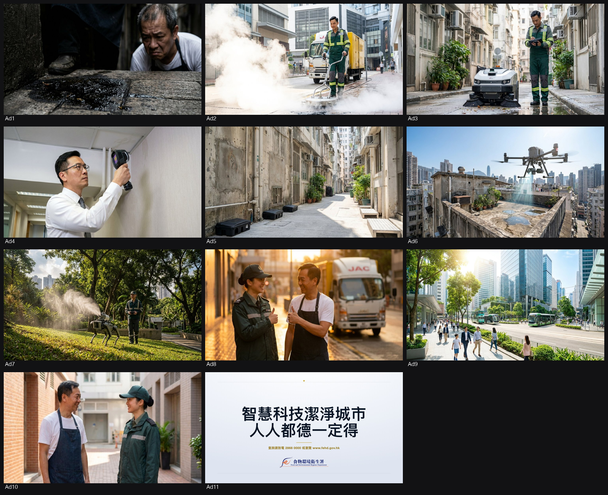
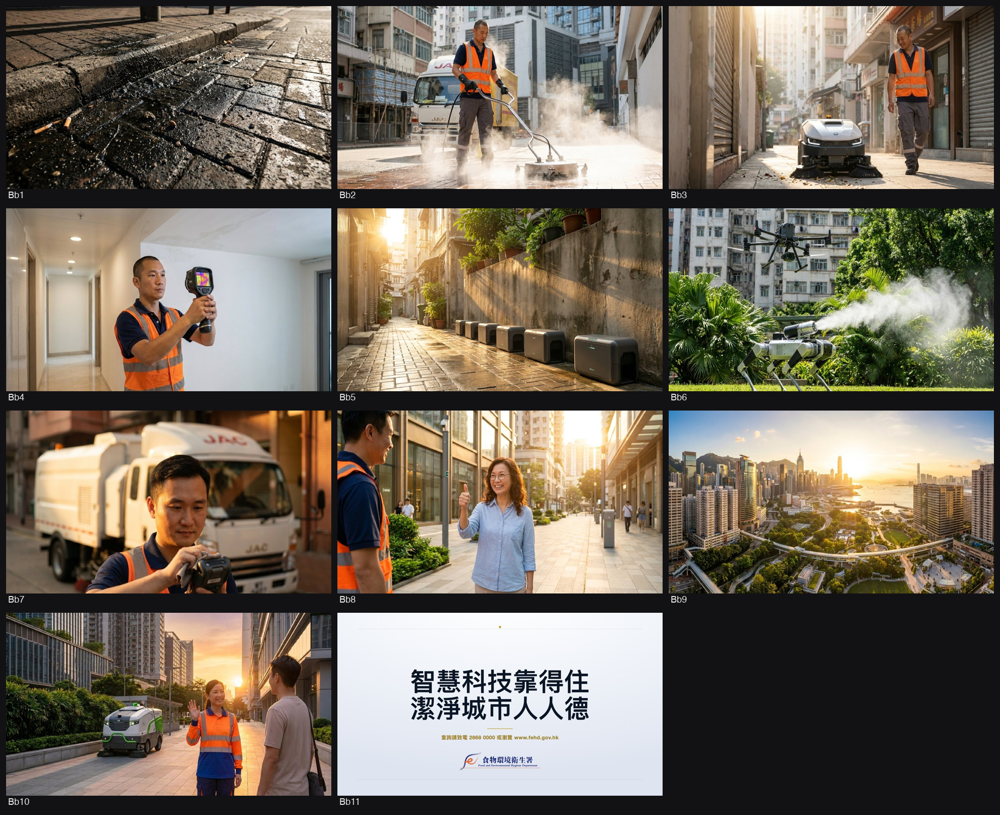
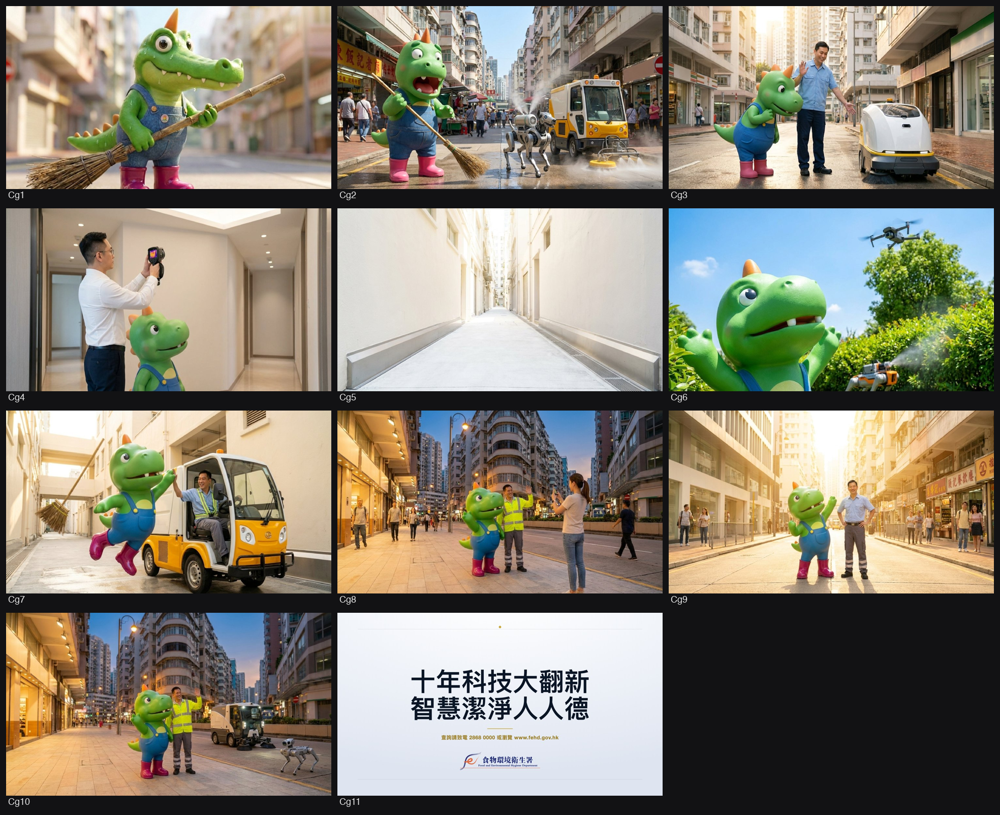
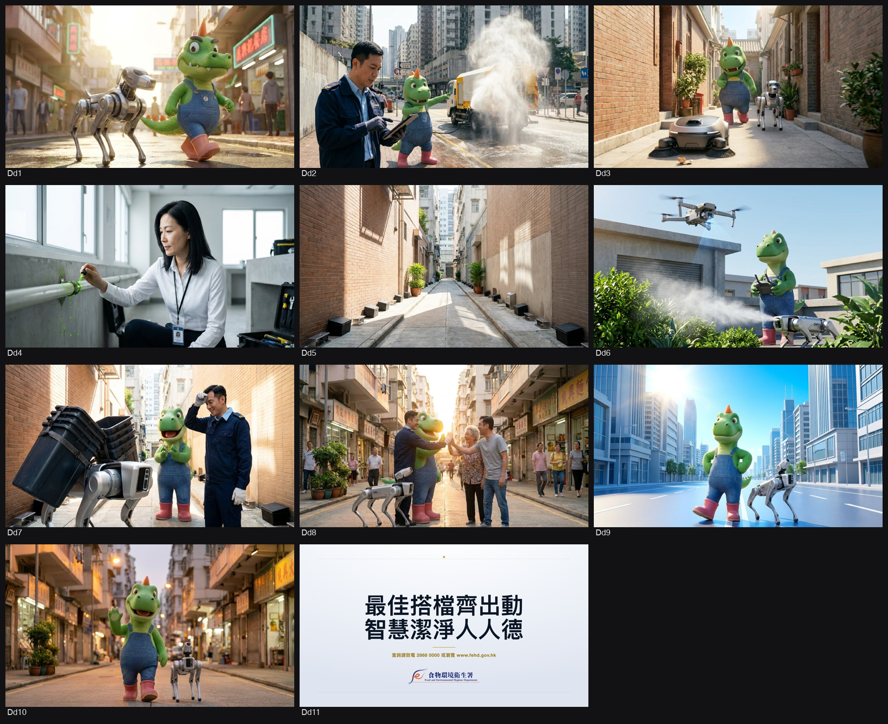
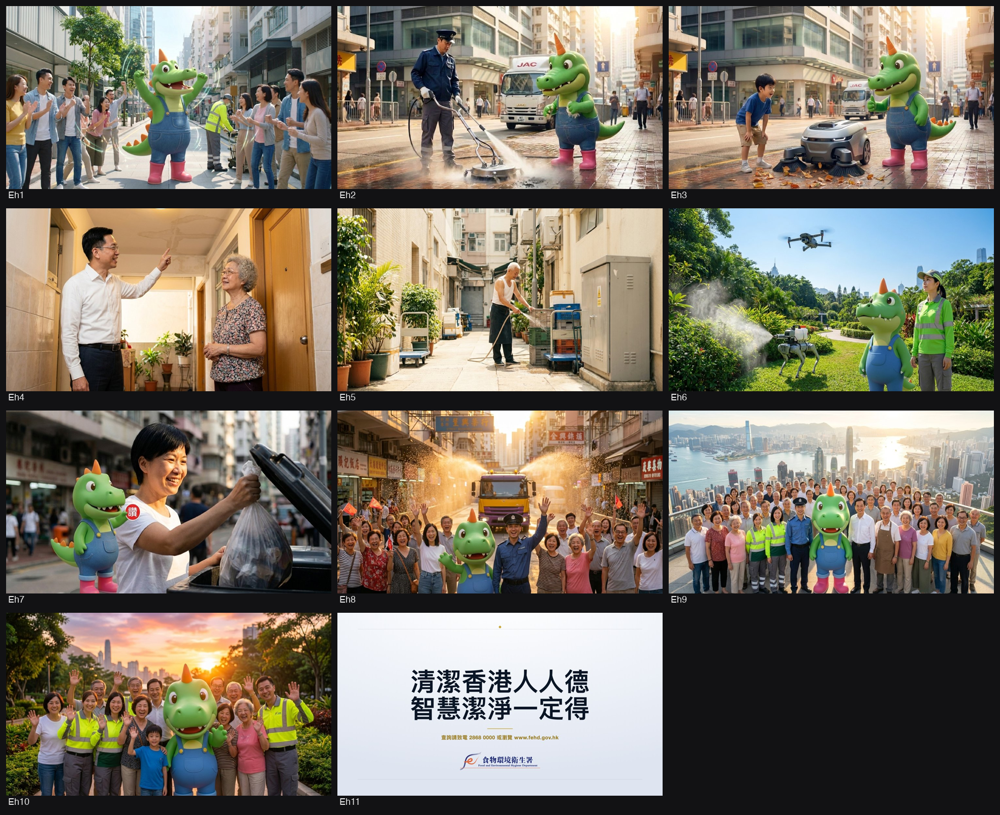
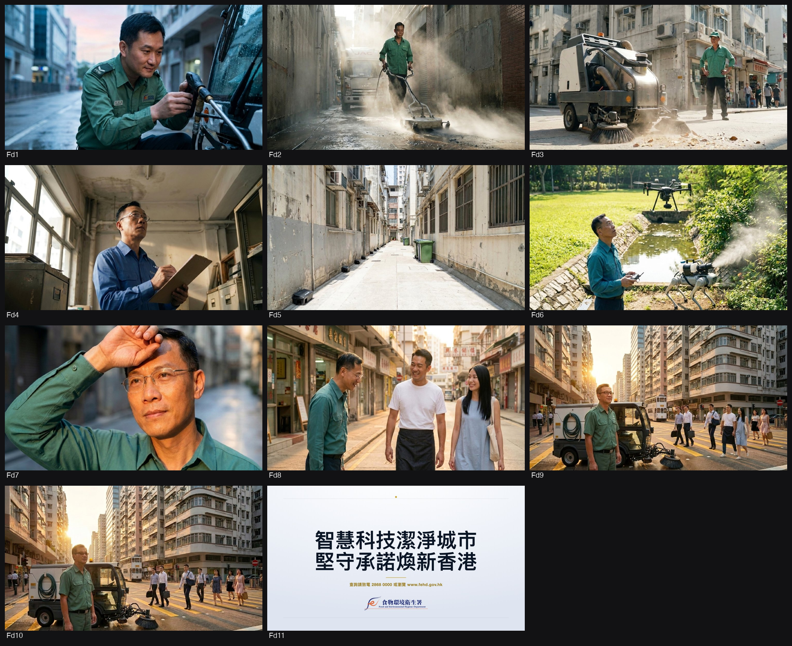
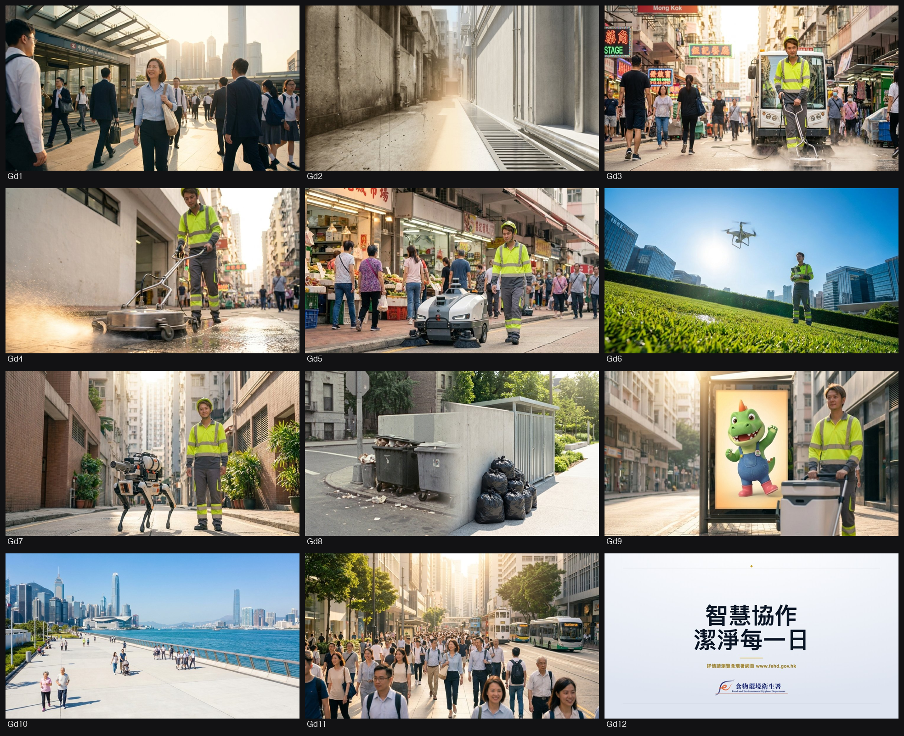

FEHDTVAPISDISTRICTGOVERNANCE · Production of TV Announcements in the Public Interest (APIs) on FEHD topics under District Governance initiative
🏠📸 Visual 素材（35 個：LOGO 2、視覺參考 27、宣傳片 6）
搵到嘅 LOGO／海報／單張／宣傳片／真實參考相，每個有原網址。剔相後揀：⭐首選＝呢張參考優先過其他；🔁重搜＝搵過好啲（e.g. logo 污糟）；🗑刪除＝搵錯即清。


委員會／agency 諗橋一定收呢批做底，必跟。
1. 背景同目的
- 發起部門：食物環境衞生署（FEHD）[p. 34]。
- 項目名稱：Production of TV Announcements in the Public Interest (APIs) on FEHD topics under District Governance initiative（「地區治理」倡議下食環署主題之電視宣傳短片製作）[p. 1, p. 34]。
- 背景與目的：配合政府「地區治理」倡議，委聘服務提供者製作全新一套 30 秒電視宣傳短片（TV API），旨在推廣食環署的工作成果與服務範疇，展示部門「以人為本」的服務承諾，並傳達食環署將以專業態度及創新思維，持續提升服務質素，促進香港的可持續發展，藉此提升部門的專業及正面形象 [p. 34]。
- 預計播放時間：短片預計於 2026 年第四季（Q4）正式開播 [p. 34]。
2. 目標受眾
- 主要受眾：香港廣大市民（The general public）[p. 34]。
3. 傳意目標／核心訊息
- 總體核心主題：「智慧科技 潔淨城市」（Smart Tech for a Cleaner City）[p. 34]。
- 傳意策略：必須以最終成效（例如「行人路更潔淨、社區環境更舒適」）為切入點，然後才引入相關科技與設備，切忌採用過於硬邦邦、純科技展示的硬銷口吻 [p. 34]。
- 具體重點訊息與科技資產 [p. 34–35]：
1. 先進洗街設備：展示小型洗街車及配備的高壓熱水清洗設備、壓力洗地盤，強調能快速清除頑固污漬、簡化人手刷洗、省時省力並減少對行人干擾，將營運覆蓋地點由 1,800 個大幅擴展至 4,000 個以上。
2. 自動化與前線支援：
- 自動清掃機器人（Autonomous street cleaning robots）。
- 工業級機械狗（Industrial grade robotic dogs）：用於搬運重型廢物及進行針對性噴霧滅蚊。
- 無人機（Drones）：於偏遠或難以到達的地點進行街道清潔巡查及辨識積水防蚊。
4. 影片／製作規格
- 集數及長度：一套共 1 條 30 秒電視宣傳短片（TV API）[p. 34, p. 37]。
- 語言版本：包含廣東話（Cantonese）及英文（English）兩個版本 [p. 34, p. 37]。
- 字幕要求：廣東話版本配以繁體中文書面語字幕；英文版本配以英文字幕 [p. 36, p. 37]。
- 手語翻譯：廣東話及英文兩個版本均須包含獨立香港手語翻譯視窗（1/6 螢幕大小、橢圓形、淺灰或粉藍色無反射背景、置於右下角、手語員須穿深色/黑色衣服、與字幕保持同步）[p. 36]。
- 配音 (VO)：須安排專業廣東話及英文旁白配音員；英文版須盡量以英語流利演繹；畫面出現的網址、電話或電郵等關鍵資訊須配有相應 VO 旁白 [p. 36, p. 38]。
- 配樂：優先採用量身訂造（Tailor-made / Post-scored）配樂，承包商須負責清理所有版權及取得全球/各渠道播放授權 [p. 37]。
- 拍攝及交付格式：優先採用 HDCam、RED ONE 或同等高清規格拍攝；交付格式為 16:9 HD XDCAM HD422 50Mbps MXF 電子檔及 HDCAM 磁帶等 [p. 37, p. 53–55]。
5. 指定班底
- 演出陣容／KOL／吉祥物：標書未有強制指定特定的導師、KOL 或吉祥物。若承包商建議使用明星/藝人演出，必須取得所有演出授權，並自費購買保額不少於港幣 1,000 萬元、將香港特區政府列為共同被保險人的公眾責任保險（保障須涵蓋藝人演出相關責任）[p. 25, p. 26]。
- 製作團隊：須提供全套專業製作團隊（Full production crew），負責香港室內及戶外外景拍攝的全套物流與運作 [p. 35]。
- 專業配音員及手語員：須安排專業粵/英配音員及認可香港手語翻譯員，手語員須於最終剪輯完成後親自核實手語翻譯準確度 [p. 36–37]。
6. 創意及策略重點／風格要求
- 人機協作（Human-Machine Collaboration）：必須清晰傳達「科技是輔助前線員工安全及高效工作的工具，而非取代人類」；畫面須呈現前線員工與智慧設備和諧協作的場景 [p. 35]。
- 結果導向（Lead with the Outcome）：以市民生活體驗與社區潔淨成果開場，避免冰冷的設備規格展示 [p. 35]。
- 平實親切語氣（Plain Language & Relatable Tone）：旁白及對白須使用生活化、易引起市民共鳴的日常用語，嚴禁使用艱深技術術語或冷冰冰的機械口吻 [p. 35]。
- 整合官方現有影片：須無縫剪輯並融入食環署提供的兩條現有官方影片片段（《地區治理:追查源頭滴水不漏》及《地區治理:街道整潔鼠患可滅》），進行調色、音效提升及格式調優，保持新舊片段視覺與聽覺的一致性 [p. 35–36]。
- 口號創作（Slogan Creation）：須創作原創、易記且涵蓋主題的中英文宣傳口號（Slogan），並取得食環署批准 [p. 36]。
8. 任何強制要求或紅線
- 雙信封制遞交（Two-Envelope System）：價格資訊（Invitation to Quotation Form、Schedule 2）與技術建議書（Schedule 3、故事板草圖、中英文腳本草稿、Schedule 4 創新/ESG 建議、Annex 4 非串通投標確認書）必須分別獨立密封於平口袋內，各一式兩份（IN DUPLICATE）遞交；技術建議書信封內及表面嚴禁有任何價格顯示或公司身份標誌，否則不予受理 [p. 7–8, p. 40, p. 42]。
- 截標必交文件（Stage 1 完整性檢查）：簽署妥當之 Offer to be Bound、Schedule 2、Schedule 3、Schedule 4 及 Annex 4 必須於截標時間（2026-10-06 15:00）前交齊，欠缺任何一項即視為無效標書 [p. 42]。
- 手語及配音錯誤重拍條款：手語視窗規格（1/6大小、橢圓形、右下角等）須完全合規。若因手語翻譯出錯或配音發音不當引致公眾投訴或電視台拒播，承包商須承擔全部費用進行重配/重剪/重交，政府不作任何額外補償 [p. 36–37]。
- 版權與智慧財產權（IP Clearance）：所有交付物之全球及永久知識產權均歸政府所有。承包商須確保所有第三方資產（音樂、字體、肖像、素材等）已取得全球、永久、無限制的播放及使用授權；因侵權產生的法律責任由承包商全權承擔 [p. 27–29, p. 37]。
- 公眾責任保險（Insurance）：承包商須自費投保不少於港幣 1,000 萬元的公眾責任保險，香港特區政府須列為共同被保險人 [p. 25]。
- 性別主流化（Gender Mainstreaming）：所有提交之內容須確保無性別偏見或不平等 [p. 38]。
fetch_source（pypdf）抽嘅標書逐字原文 —— 委員會／agency／debrief／5W1H 都餵呢份做 ground-truth。 · 📄 開原始檔 ↗
===== Quotation Document.pdf(Specification 原件)=====
[p34]
Quotation Ref.: (11) in FEHD (PIED) 3-5/5/13 Pt. 25 34
SCHEDULE 1
SPECIFICATIONS OF THE SERVICES
1. Background
The Food and Environmental Hygiene Department ("FEHD" or "the Department") plans to
produce a new television Announcement in the Public Interest (API) covering FEHD-related
topics under the District Governance initiative. This initiative aims to enhance the corporate
image of FEHD by highlighting the Department's achievements and ongoing efforts.
Specifically, the TV API will promote the Department's work, enhance public understanding
of its scope of services, and demonstrate its commitment to a "people -oriented" approach.
Furthermore, the TV API will convey the message that FEHD will continue to elevate service
quality and contribute to the sustainable development of Hong Kong with professionalism
and an innovative mindset. This TV API is scheduled for broadcast in the fourth quarter of
2026.
2. Objectives
To develop a compelling storyboard and produce a professional -grade 30-second TV API
that showcases the achievements of FEHD across three key focus areas, as outlined in below.
3. Target Audience
The general public
4. Core Theme: "Smart Tech for a Cleaner City"
The overarching message must be framed as "Smart Tech for a Cleaner City". The narrative
should lead with the ultimate outcome (i.e., "Cleaner footpaths and more pleasant
neighbourhoods") before introducing the specific equipment. The content must avoid an
over-engineered, purely technological showcase tone.
5. Key Messages: Deep-cleaning Footpaths and Elevating City Landscape
Showcase the Department’s vision of the wider use of technology to enhance service
efficiency, while highlighting the ultimate outcome: a cleaner, more pleasant living
environment for the public. Key elements to feature include:
(i) Advanced Street Washing Equipment
Feature FEHD’s mini street -washing vehicles equipped with high -pressure hot -
water cleaners and pressure washer surface cleaners . Emphasise how these tools
quickly remove stubborn stains, streamline manual scrubbing work, save time and
energy, and reduce disturbances to pedestrians , and expand operational coverage
from 1,800 to over 4,000 locations.
(ii) Automation and Labour Support
Showcase innovative equipment deployed to increase working efficiency and
reduce the physical burden on frontline workers, including:
➢ Autonomous street cleaning robots;
➢ Industrial gra de r obotic dogs for heavy waste transportation and targeted
fogging operations for mosquito control; and
➢ Drones for conducting street cleanliness inspections and identifying stagnant
water or potential mosquito breeding places in remote or hard-to-reach areas.
[p35]
Quotation Ref.: (11) in FEHD (PIED) 3-5/5/13 Pt. 25 35
6. Creative Direction and Narrative Guidelines
Bidders are required to develop a compelling 30-second storyboard that strictly adheres to
the following creative directives:
(a) Highlight Human-Machine Collaboration
The API must clearly communicate that technology is a tool that empowers FEHD’s
dedicated frontline staff. It does not replace them; rather, it supports them to work more
safely and effectively. Visuals should depict staff and smart equipment working in
harmony.
(b) Lead with the Outcome, Not the Equipment
Avoid an over-engineered, purely technological showcase. The narrative must lead with
the human experience and the outcome (a cleaner, more pleasant city) before revealing
the tools used to achieve it.
(c) Use Plain Language and Relatable Tone
The script and voiceover (VO) must use simple, everyday language that resonates with
the general public. Bidders must avoid technical jargon, overly complex engineering
terms, or a cold, robotic tone.
7. Launch Date
Station copies of the TV API shall be completed and delivered to broadcasting stations by
Monday, 7 December 2026, or as otherwise directed by FEHD.
8. Scopes of Services
The Contractor is required to provide the following services, materials and professionals for
the production of the TV API:
(a) Creative and Copywriting
Provide creative and copywriting services, including the development of creative
concepts, scripts, storyboards, subtitles, and graphic or photographic materials. While
all key message areas set out in Section 3 must be represented, the Service Provider
should prioritise creative visual storytelling to effectively showcase the various
technologies within the 30 -second timeframe. The creative proposal must be the
Service Provider’s original idea and must not have been previously acquired or used by
any other party. If a Service Provider’s creative proposal is accepted in this quotation
exercise, the awarded Contractor shall not re-sell the idea to any other party.
(b) Production Logistics
Arrangement of shooting place, full crew and equipment for location shooting both
outdoor and indoor in Hong Kong (including transportation).
(c) Post-Production
Provide off -line and on -line editing, audio recording, sound mixing, special sound
effects, and all other post-production services (including animations, if specified in the
storyboard).
(d) Editing and Integration of Existing Videos
Footage from the official videos provided by FEHD (hereinafter "Existing Videos") may
be adapted and incorporated where applicable, including but not limited to colour
correction, audio enhancement, format conversion, and quality upscaling. The
Contractor shall seamlessly integrate the edited Existing Videos into the TV API in
[p36]
Quotation Ref.: (11) in FEHD (PIED) 3-5/5/13 Pt. 25 36
accordance with the approved creative concept and storyboard, ensuring visual and
audio consistency with the newly produced footage . For reference, the links to the
Existing Videos are provided below:
• Existing Video 1: 地區治理：追查源頭 滴水不漏
https://www.news.gov.hk/chi/2025/07/20250725/20250725_114932_045.html
• Existing Video 2: 地區治理：街道整潔 鼠患可滅
https://www.news.gov.hk/chi/2025/08/20250822/20250822_173010_239.html
(e) Additional Shooting Services
Conduct supplementary shooting services as required by the FEHD during the
production process, including but not limited to pickup shots, additional B-roll footage,
reshoots, and supplementary interviews. All additional shooting shall be carried out
by the full crew using professional-grade equipment, and the resulting footage shall be
delivered in the same technical specifications as the main production. Additional on-
site filming shall be conducted where existing footage does not adequately cover the
required storyboard scenarios.
In the event that outdoor shooting is rendered impossible due to Tropical Cyclone
Warning Signal No. 8 or above, or Black Rainstorm Warning Signal, the Contractor
shall notify the Department immediately. The Department may, at its discretion, grant
a make-up shooting day without additional cost to the Department, provided the final
delivery date (7 December 2026) is not delayed.
(f) Slogan Creation
Create an original, memorable slogan in both English and Chinese that encapsulates the
main theme of the TV API. The slogan shall be subject to FEHD's approval and must
not infringe any existing intellectual property rights.
(g) Voice-Over Talents (TV API)
Cantonese and English voice -over talents for the conversations/narrations for the TV
API. The voice -overs/conversations/narrations in the English TV API should be
delivered in English as far as possible. In the event that any language version of the
TV API recording is rejected for broadcast or deemed unsatisfactory by FEHD, ISD or
TV stations due to inaccurate or improper pronunciation, the Contractor is required to
arrange for professional voice-over talents to re-record the affected language version to
rectify the inaccuracy/deficiency, and deliver the approved version to TV stations for
replacement at no cost to FEHD.
(h) Subtitles and Sign Language
(i) Subtitles: Provide written Traditional Chinese ( 繁 體 中 文 書 面 語 ) for the
Cantonese version and English for the English version of the TV API.
(ii) Sign Language: Inclusion of sign language interpretation (手語翻譯 – 香港手語)
for the TV API in both the Cantonese and English versions. The requirements
regarding the window showing the sign language interpretation on screen are listed
below:
Shape & Size: Oval -shaped-Size: One -sixth of the size of the screen for
showing full version of the signs.
Background: Non-reflective plain backdrop, preferably in light grey or powder
blue colour.
Position: Normally at lower right hand corner of the screen and in the same
position throughout the API.
Attire: Sign language interpreters are advised to wear dark clothes, preferably
[p37]
Quotation Ref.: (11) in FEHD (PIED) 3-5/5/13 Pt. 25 37
black colour.
Synchronisation: Presentation of the sign language should synchronise with the
subtitling as far as possible.
Verification: The sign language interpreter is required to check the accuracy of
the sign language interpretation in the final cut of the TV API. In the event of
any public complaints or broadcast errors arising from inaccurate sign language
interpretation, the Contractor shall bear all costs and responsibilities for
rectifying the issue, including re -editing and re -delivering the TV API to
broadcasting stations at no additional cost to the Government.
(i) Music and Copyright Clearance
The Contractor should be responsible for musical arrangement (tailor -made / post -
scored music is preferred) of the API, clearance of all copyright issues and obtain
necessary licences at its own cost and expense for broadcasting anywhere within and
outside Hong Kong, any occasion and any usage using any media, including, but not
limited to, radio channels, TV, video walls, the Internet and multi-media advertisements
on public transports, and at seminars, exhibitions and other public functions/activities,
and for production of VCDs/DVDs/CD -ROMs and other publicity materials by the
Government for non-profit making purpose.
(j) Ownership of Copyright
Worldwide and perpetual copyright of the API, VCDs/DVDs/CD -ROMs and other
publicity materials produced shall belong to the Government.
(k) Delivery and Distribution
Delivery of the TV API to local TV stations, i.e. TVB, i -CABLE HOY TV, PCCW
Media (Now TV), HKTVE (Viu TV) and RTHK TV under the instruction of the ISD.
The Contractor is also responsible for any station copy fees charged by the aforesaid TV
stations.
9. Deliverables
One (1) TV API in two language versions (Cantonese and English);
Edited versions of the Existing Videos provided by FEHD, seamlessly integrated into
the TV API;
Shooting format: HDCam, RED ONE or equivalent is preferred. High -definition
Video (HDV) formats and still camera shooting may be considered depending on the
creative;
Output: (1) File-based format:16:9 (HD) in XDCAM HD422 at 50Mbps in MXF;
(2) Video-tape format: 16:9 (HD) in HD CAM;
Duration: 30 seconds per language version;
Languages:
➢ Cantonese (with written Traditional Chinese subtitles 繁體中文書面語 and sign
language window); and
➢ English (with English subtitles and sign language window);
Background music: tailor-made / post-scored music is preferred;
Soft and hard copies of the approved scripts (in both Chinese and English);
Soft and hard copies of the storyboard, including draft scripts and visual descriptions
in both Chinese and English;每個概念必跟，違 = 廢稿。
⚡ 創意亮點 — FEHDTVAPISDISTRICTGOVERNANCE·Production of TV Announcements in the Public Interest (APIs) on FEHD topics under District Governance initiative（research 掘出嚟，可以做橋嘅真嘢）
1. 🏷️ 清潔龍阿德與「人人有德」
- 事實：食環署於2016年委任「清潔龍阿德」為清潔香港大使，造型為綠色清潔龍、橙色角、牛仔吊帶褲及粉紅膠靴，口頭禪為「做乜？一定得！」，2026年官方活動口號為「清潔香港 人人都『德』」。（出處：[hooks-research] FEHDTVAPISDISTRICTGOVERNANCE）
- 💡 可以點做橋：可以阿德的「德／得」雙關諧音及經典口頭禪「做乜？一定得！」做橋，貫穿智慧科技與全民清潔行動。
2. 🏷️ 小型洗街車與高壓熱水槍
- 事實：食環署引入配備高壓熱水清洗設備及壓力洗地盤的小型洗街車，能快速深層去除路面頑固黑油污，並將潔淨覆蓋地點由1,800個大幅擴展至4,000個以上。（出處：Quotation Document.pdf (p. 34)）
- 💡 可以點做橋：可以「高壓熱水洗頑垢、覆蓋四千地點」的前後對比畫面做橋，突出清潔成果與覆蓋率躍升。
3. 🏷️ 工業級機械狗與自動清掃機器人
- 事實：食環署部署四足工業級機械狗進行搬運重型廢物及針對性噴霧滅蚊，並以自動清掃機器人在狹窄行人路進行自動化清掃，極大地減輕前線員工體力負擔。（出處：Quotation Document.pdf (p. 34)）
- 💡 可以點做橋：可以「前線員工與機械狗／機器人神隊友並肩作戰」的人機協作故事做橋，打破科技取代人力的迷思。
4. 🏷️ 無人機空中巡查積水
- 事實：食環署運用多旋翼無人機於偏遠或難以到達的地點（如老舊大廈天台、雨水渠或山邊斜坡）進行空中清潔巡查，精準辨識隱蔽積水及潛在蚊患滋生地。（出處：Quotation Document.pdf (p. 34)）
- 💡 可以點做橋：可以「上帝視角航拍死角積水、讓蚊患無所遁形」的高科技監測鏡頭做橋，突顯主動防禦思維。
5. 🏷️ 整合兩條地區治理官方影片
- 事實：標書指定必須無縫整合食環署兩條現有官方短片《地區治理:追查源頭滴水不漏》（冷氣機滴水最高罰款 \$25,000）與《地區治理:街道整潔鼠患可滅》。（出處：Quotation Document.pdf (p. 36)）
- 💡 可以點做橋：可以將滴水追查與防鼠成果畫面作為「地區治理實效」的核心證據做橋，增強宣傳片權威感。
6. 🇭🇰 「垃圾蟲」與「人見人憎」集體回憶
- 事實：香港自 1970 年代起以「垃圾蟲」及「亂拋垃圾，人見人憎」作為清潔香港經典反派符號與阻嚇式口號，成為深植全港市民心中的集體回憶。（出處：[hooks-research] FEHDTVAPISDISTRICTGOVERNANCE）
- 💡 可以點做橋：可以由傳統「垃圾蟲／怒目雙眼」的懷舊印象，轉化為「今日智慧科技全方位護航」做橋，拉開年代反差感。
7. 💡 「結果導向」開場原則
- 事實：標書特別強調創作須「Lead with the Outcome, Not the Equipment」，必須先展示市民享受潔淨宜居社區的幸福感，切忌製作成冰冷的工程設備展示片。（出處：Quotation Document.pdf (p. 35)）
- 💡 可以點做橋：可以市民踏在乾淨無污路面上的第一身微觀視覺開場做橋，隨後才拉開鏡頭揭示背後默默工作的洗街車與前線人員。
8. 🏷️ 雙語字幕與獨立手語翻譯視窗
- 事實：標書規定廣東話配繁體中文書面語字幕、英文配英文字幕，且雙語版本均須包含右下角 1/6 螢幕大小、橢圓形、淺灰/粉藍背景、手語員穿黑衣之香港手語翻譯視窗。（出處：Quotation Document.pdf (p. 36)）
- 💡 可以點做橋：可以無障礙包容性設計為品牌信任基石做橋，展現食環署「以人為本」顧及不同社群需求的服務承諾。
好的，這是一份整合後的乾淨研究報告：
---
食物環境衞生署宣傳片網上研究報告
1. 議題背景
* 地區治理理念：香港政府近年積極推動「地區治理」理念，旨在提升地區服務效率、回應市民需求，並促進和諧社區。食環署作為重要一環，其工作範疇與市民日常生活息息相關，包括環境衞生、食物安全、防治蟲鼠等。
* 政策脈絡：
* 政府在《2023年施政報告》中強調「以民為本」的施政理念，並提出多項措施改善環境衞生，例如加強清潔街道、打擊非法棄置垃圾等。
* 2023年5月，政府公布「完善地區治理建議方案」，旨在強化地區治理架構及重塑區議會，並於2023年7月獲立法會全票通過《2023年區議會(修訂)條例草案》，並於7月10日正式刊憲生效。
* 2此改革旨在強化行政主導，落實「愛國者治港」原則，並解決過往區議會「泛政治化」問題，確保區議會回歸其《基本法》所規定的諮詢和社區服務功能。
* 地區治理的重點在於聚焦市民最關心的議題，例如舊樓維修、樓宇管理、基層醫療、安老服務及社區環境衞生等，希望透過地區治理，將資源進一步下沉，讓政策「貼地」，市民「有感」。
* 公眾關注度：近年來，香港市民對環境衞生和城市管理的要求不斷提高，特別是在疫情後，公眾對公共衞生的關注度顯著上升。
* 科技應用：食環署近年積極引入創新科技，例如智能垃圾桶、機械人清潔車、無人機巡查、熱能探測攝像機結合人工智能追蹤鼠患等，以應對人手短缺及提升工作效率。這些科技應用是本次API宣傳的重點，並與宣傳片強調「智能科技潔淨城市」及「以人為本」的服務宗旨不謀而合。
2. 關鍵事實/數據/日期
* 地區治理架構：
* 2023年7月，政府成立「地區治理領導委員會」及「地區治理專組」。
* 2024年1月1日，第七屆區議會開始運作。
* 新區議會總議席為470個，包括179個委任議席、176個地區委員會界別議席、88個區議會地方選區議席（共44個選區，每區2席，雙議席單票制）及27個當然議席（新界鄉事委員會主席出任）。
* 地區治理領導委員會工作進度 (截至2026年7月底)：
* 地區服務及關愛隊伍已探訪或接觸超過118,000戶長者、護老者及殘疾人士。
* 超過3,900戶家庭獲關愛隊轉介，接受安裝「平安鐘」系統資助。
* 2025-26學年，超過10,000名學生參與「校本課後託管服務計劃」，較上學年增加81間學校。
* 食環署利用熱能探測攝像機結合人工智能追蹤鼠患，1月至6月期間發出171份「潔淨通知書」。
* 食環署自5月起將自動街道清潔機械人試驗擴展至啟德新發展區。
* 房屋署完成9個屋邨外牆美化工程。
* 路政署重鋪80段路面，總長度超過26公里。
* 鼠患情況：2024年捕獲約89,600隻活鼠，較2023年增加約40%。
* 冷氣機滴水投訴：冷氣機滴水投訴近年有所增加，由2023年約31,000宗增至2024年約34,000宗。
3. 相關官員/單位
* 政務司司長 陳國基：主持「地區治理領導委員會」，負責制訂地區治理整體策略方針、具體政策和措施、工作優次和資源調撥。
* 政務司副司長 卓永興：主持「地區治理專組」，負責指揮和統籌各政策局及部門的地區工作，並協調涉及跨部門或跨區的地區問題。
* 民政及青年事務局局長 麥美娟：曾介紹《完善地區治理》方案的內容和推行工作。
* 食物環境衞生署署長 吳文傑：曾出席「讓狗隻進入獲獲准食肆」簡介會及向食環署同事派發宣傳單張。
* 環境及生態局局長 謝展寰：曾到深水埗區環境衞生辦事處向食環署同事派發宣傳單張。
* 環境及生態局常任秘書長(食物) 楊碧筠：曾到深水埗區環境衞生辦事處向食環署同事派發宣傳單張。
* 環境及生態局副局長 黃淑嫻：曾到深水埗區環境衞生辦事處向食環署同事派發宣傳單張。
* 食物環境衞生署副署長（環境衞生） 姚繼卓：曾出席「讓狗隻進入獲准食肆」簡介會。
* 食物環境衞生署助理署長（行動） 溫志信：曾分享處理冷氣機滴水問題的行動資訊。
* 食物環境衞生署總監（法例檢討） 葉國祥：曾簡介「讓狗隻進入獲准食肆」。
* 民政事務專員：擔任各區區議會主席，並作為政府地區代表，統籌「關愛隊」、區議會及地區三會。
* 區議會資格審查委員會：由政務司司長擔任主席，確保所有區議員符合資格。
4. 受眾 Sentiment (來自近期宣傳掃描及競品觀察)
* 對政府宣傳的普遍觀感：公眾普遍認為政府宣傳片多為嚴肅、務實，強調政府的努力和成果，但較少著墨於科技應用帶來的「成果」和「效率提升」。
* 對「清潔香港」運動的觀感：這類宣傳多以呼籲市民合作、共同保持環境清潔為主，語氣較為親民、教育性，有時會使用動畫或輕鬆幽默的手法，但較少提及政府在清潔工作上的科技投入和創新。
* 對「智慧科技」宣傳的接受度：香港警務處「智慧警政」宣傳片顯示，公眾對展示科技如何提升執法效率和服務質素的宣傳有一定接受度，認為其專業、具前瞻性，強調科技帶來的便利和安全。
* 對國際案例的偏好：
* 新加坡國家環境局 (NEA) 的宣傳片常將科技與「宜居城市」的概念結合，強調科技如何提升生活品質，並呈現乾淨、現代化的城市景象，輔以清晰的數據或案例，強調科技帶來的「成果」和「市民得益」。
* 日本清潔公司/地方政府的宣傳片有時會將清潔工作「擬人化」或「英雄化」，展現清潔人員的專業和辛勞，同時融入科技元素，情感連結較強，將「清潔」提升到「守護城市」的高度。
* 國際科技公司（如 iRobot）的廣告則強調「科技為人服務」的理念，將複雜的技術轉化為簡單易懂的「生活改善」。
5. 近期宣傳與競品掃描
5.1 近期同類宣傳 (香港政府 + 相關機構)
* 「地區治理」系列宣傳片 (2023-2024年，香港政府新聞處)：
* 手法/語氣：採用紀錄片式手法，透過不同政府部門前線人員的真實工作場景，展現「地區治理」如何改善市民生活。語氣較為嚴肅、務實，強調政府的努力和成果。
* 例子：
* 「地區治理：追查源頭 滴水不漏」 (2025年7月25日，政府新聞處)：主要講述食環署與其他部門合作，追查蚊患源頭，強調跨部門協作的重要性。
* 「地區治理：街道整潔 鼠患可滅」 (2025年8月22日，政府新聞處)：聚焦食環署在滅鼠工作上的努力，展示前線人員的工作日常。
* 「清潔香港」運動系列宣傳 (2022-2023年，環境保護署 / 食物環境衞生署)：
* 手法/語氣：多以呼籲市民合作、共同保持環境清潔為主。語氣較為親民、教育性，有時會使用動畫或輕鬆幽默的手法。
* 例子：
* 「清潔香港」宣傳短片 (2022年，環境保護署)：呼籲市民減少製造垃圾，並正確分類回收。
* 「保持香港清潔」系列海報及短片 (2023年，食物環境衞生署)：提醒市民不要隨地吐痰、亂拋垃圾等。
* 香港警務處「智慧警政」宣傳片 (2023年，香港警務處)：
* 手法/語氣：著重展示警隊如何利用科技（如無人機、大數據分析、智能機械人）提升執法效率和服務質素。語氣專業、具前瞻性，強調科技帶來的便利和安全。
5.2 競品 / 同類創意做法 (本地 + 國際參考)
* 新加坡國家環境局 (NEA) 宣傳片 (近年)：
* 手法/語氣：常將科技與「宜居城市」的概念結合，強調科技如何提升生活品質。視覺上常呈現乾淨、現代化的城市景象，並輔以清晰的數據或案例。
* 例子：NEA關於智能垃圾收集系統的宣傳片，展示機械人如何高效處理垃圾，同時強調減少人手、提升效率。
* 日本清潔公司 / 地方政府宣傳 (近年)：
* 手法/語氣：有時會將清潔工作「擬人化」或「英雄化」，展現清潔人員的專業和辛勞，同時融入科技元素。
* 例子：某日本清潔公司宣傳片，展示清潔人員操作高科技清潔設備，將城市打掃得一塵不染，並配以激昂的音樂。
* 國際科技公司 (如 iRobot) 廣告 (近年)：
* 手法/語氣：聚焦於產品如何解決用戶痛點（如省時省力），並透過輕鬆、生活化的場景展示產品的便利性。
* 例子：iRobot Roomba 吸塵機械人廣告，展示機械人如何在家庭中自動清潔，讓用戶享受更舒適的生活。
5.3 需避開的濫用手法
* 單純展示政府官員巡視或發言。
* 過於強調「前線人員辛勞」而忽略科技帶來的效率提升。
* 將科技產品「硬照式」展示，缺乏故事性或情境。
* 使用過於專業或技術性的術語，缺乏通俗易懂的解釋或視覺呈現。
* 過於說教或命令式的語氣。
* 過度使用「航拍」或「延時攝影」展現城市面貌，若與食環署的具體工作內容連結不強則顯得空泛。
6. 香港角色與差異化機會
6.1 差異化空白 (機會)
* 受眾情緒空白：
* 「輕鬆幽默」或「溫馨感人」的角度：以輕鬆、幽默或帶有溫馨感的方式呈現食環署的科技應用，例如透過小朋友的視角看清潔機械人，或以家庭生活場景展示清潔成果。
* 「自豪感」或「未來感」：強調香港作為國際大都會，在環境衞生管理上亦走在前沿，利用科技提升城市形象，讓市民對香港的潔淨程度產生自豪感。
* 訊息角度空白：
* 「科技如何讓城市更『聰明』」：延伸到科技如何讓城市管理更具智慧、更有效率，從而提升整體城市運作的「聰明度」。
* 「科技如何『解放』前線人員」：強調科技不是取代人，而是讓前線人員從繁重、危險的工作中解放出來，讓他們能更專注於需要人手判斷和處理的任務，提升工作尊嚴和效率。
* 「科技如何『預防』問題發生」：除了事後清潔，還可以強調無人機巡查等科技如何提前發現問題（如積水、鼠患），從源頭上預防環境問題的發生。
* 視覺呈現空白：
* 「微觀細節」與「宏觀成果」的對比：透過特寫鏡
好的，這是一份為廣告創作團隊準備的『官方用語對照表』，確保他們在製作食環署宣傳片時使用正確的官方名稱和術語。
---
香港政府 FEHDTVAPISDISTRICTGOVERNANCE 部門宣傳片 — 官方用語對照表
1. 部門 / 辦事處 中文正名 + 官方英文全名 (+ 官方網址)
* 食物環境衞生署 (FEHD)
* 英文全名：Food and Environmental Hygiene Department
* 官方網址：[https://www.fehd.gov.hk/tc/index.html](https://www.fehd.gov.hk/tc/index.html)
2. 入面提到嘅計劃 / 政策 / 程序 嘅官方中英名稱
* 地區治理
* 英文：District Governance initiative
* 電視宣傳短片 (API)
* 英文：TV Announcements in the Public Interest (APIs)
* 以人為本
* 英文：people-oriented approach
* 性別主流化
* 英文：Gender Mainstreaming
* 雙信封制遞交
* 英文：Two-Envelope System
* 公眾責任保險
* 英文：Public Liability Insurance
* 知識產權
* 英文：Intellectual Property Rights (IPR)
3. 專有名詞 / 技術詞 嘅官方或慣用中英對照
* 智慧科技 潔淨城市 (總體核心主題)
* 英文：Smart Tech for a Cleaner City
* 先進洗街設備
* 英文：Advanced Street Washing Equipment
* 小型洗街車
* 英文：mini street-washing vehicles
* 高壓熱水清洗設備
* 英文：high-pressure hot-water cleaners
* 壓力洗地盤
* 英文：pressure washer surface cleaners
* 自動化與前線支援
* 英文：Automation and Labour Support
* 自動清掃機器人
* 英文：Autonomous street cleaning robots
* 工業級機械狗
* 英文：Industrial grade robotic dogs
* 搬運重型廢物
* 英文：heavy waste transportation
* 針對性噴霧滅蚊
* 英文：targeted fogging operations for mosquito control
* 無人機
* 英文：Drones
* 街道清潔巡查
* 英文：street cleanliness inspections
* 辨識積水防蚊
* 英文：identifying stagnant water or potential mosquito breeding places
* 人機協作
* 英文：Human-Machine Collaboration
* 結果導向
* 英文：Lead with the Outcome
* 平實親切語氣
* 英文：Plain Language & Relatable Tone
* 旁白 (VO)
* 英文：Voiceover (VO)
* 故事板
* 英文：Storyboard
* 腳本
* 英文：Script
* 初剪版
* 英文：Rough cuts
* 最終定剪版
* 英文：Final cuts
* 送交電視台副本
* 英文：Station copies
* Cue sheet
* 英文：Cue sheet
* 低解像預覽檔/劇照
* 英文：low-resolution preview files/stills
* 招標簡介會
* 英文：Tender Briefing Session
* 截標時間
* 英文：Quotation Closing Time
* 創意建議書簡報
* 英文：Creative Proposal Presentation
* 批出合約
* 英文：Award of Contract
* Kick-off meeting
* 英文：Kick-off meeting
* 拍攝前會議
* 英文：Pre-production meeting
* 版權
* 英文：Copyright
* 智慧財產權
* 英文：Intellectual Property Rights (IPR)
* 共同被保險人
* 英文：co-insured
* 宣傳口號
* 英文：Slogan
4. 常見會錯譯 / 易混淆嘅地方，標明正確寫法
* 「地區治理」倡議：應使用 "District Governance initiative"，而非 "District Governance" 或其他變體。
* 電視宣傳短片：官方縮寫為 "API"，英文全名為 "Announcements in the Public Interest"。
* 以人為本：官方譯法為 "people-oriented approach"。
* 智慧科技 潔淨城市：這是核心主題的官方中英文對照，必須完全一致。
* 旁白：英文為 "Voiceover" 或簡寫 "VO"。
* 手語翻譯視窗：應強調 "Hong Kong Sign Language interpretation window" 以區分不同手語。
* 量身訂造配樂：官方或慣用說法為 "Tailor-made" 或 "Post-scored" 配樂。
* 公眾責任保險：英文為 "Public Liability Insurance"，而非 "General Liability Insurance" 等。
* 共同被保險人：英文為 "co-insured"。
* 截標時間：英文為 "Quotation Closing Time"。
* 初剪版 和 最終定剪版：英文分別為 "Rough cuts" 和 "Final cuts"。
* 送交電視台副本：英文為 "Station copies"。
---
搵到嘅官方來源（網頁名 + 撮要，似 search 結果；撳入睇原文）：
- 除標書表明，人物一般使用華人面孔（東亞／香港華人），唔好生成西方／白人臉
- 衣著連戲：同一角色每一格都著返同一套衫（衫款／顏色／髮型／配件固定），除非故事明寫佢換咗衫
- 全 board 畫風完全一致：同一 render 風格／同一打燈／同一色調／同一線條筆觸，由頭到尾統一，似同一個畫師一次過畫
- Storyboard 盡量唔好出現雨傘；若劇情一定要有雨傘，唔可以係黃色
唔強制，諗橋時隨機抽嚟畀 agency 撞火花。
5W1H 創意 Provocation — FEHDTVAPISDISTRICTGOVERNANCE
WHO — 對邊個講 + 佢而家點
- Q1 如果呢個 message 只可以打動「最唔關心、最 cynical」嗰個觀眾——要加咩一個 element（畫面／聲／人物／情境）先 3 秒內 hook 住佢、令佢唔 skip？
→ 加入街角陳年黑油污被高壓熱水槍一沖即淨嘅微觀特寫與高保真水聲卡點，用最直接嘅視覺去污爽快感，第一時間吸引眼球同消解厭煩感。
- Q2 呢班受眾平時食開咩視聽語言（平台／節奏／語氣）？要 adapt 邊種佢熟悉嘅風格，先入到腦而唔似「政府嘢」？
→ adapt 社交媒體熱門嘅「深層清潔／ASMR 治癒短片」動態視覺與平實生活化廣東話口語旁白，以節奏明快嘅人機協作實景鏡頭切入，擺脫傳統宣傳片嘅硬銷公告感。
WHAT — 收窄到一個 + 證據
- Q3 成個 campaign 只准觀眾記住一個 element（一個畫面／一個 visual device／一句）——你揀咩？點解係佢？
→ 揀「前線員工與工業級機械狗／小型洗街車並肩作戰」嘅人機協作特寫畫面；因為佢最能直觀呈現「科技係前線得力助手、提升潔淨效率」嘅核心訊息，打破「科技取代人力」嘅迷思。
- Q4 客戶 key message 好抽象，要用咩具體 element（真場面／真數字／真人／真物）去「show 唔 tell」，令佢落地、唔流口號？
→ 用「小型洗街車高壓熱水清洗路面黑垢」嘅前後實景對比，配合「潔淨地點由 1,800 個大幅擴展至 4,000+ 個」嘅動態圖像數據，以及前線清潔員專注操作設備嘅真實鏡頭去落地展現。
WHY — 點解信 + 情感
- Q5 觀眾點解要信／關佢事？要加咩證據 element 或情感共鳴 element，先由「事不關己」變「同我有關」？
→ 加入市民（長者、親子、商戶）喺乾淨無污嘅行人路同後巷舒適散步、無後顧之憂嘅真實生活畫面，連結食環署追查冷氣機滴水與跨部門滅鼠嘅成果，將高新科技轉化為市民觸手可及嘅社區獲得感。
WHEN / WHERE — 出街情境
- Q6 呢條嘢實際喺邊度、咩狀態被睇到（電視 prime／車廂無聲／手機 scroll／戶外經過）？要 adapt 咩風格（有聲冇聲／首 3 秒／大字／節奏）先食到當下情境？
→ 考慮到電視黃金時段、港鐵車廂無聲螢幕及手機社交平台，adapt 高對比度動態繁體中文 Super 蓋字、右下角 1/6 認可香港手語翻譯視窗，以及強烈嘅開場視覺衝擊與聲音節奏，確保無聲有聲皆能清晰傳達。
- Q7 出街時間（事件前／中／後）decide 調子係「預告期待」定「總結成就」？要加咩 element 配合呢個時間感？
→ 於 2026 年第四季（Q4）首播屬於「地區治理成效展示期」，調子應為「成果展現與前瞻承諾」；應加入全港 18 區煥然一新嘅晨光街景與無人機空中巡查鏡頭，營造全方位護航嘅大氣自信感。
HOW — 風格 + 差異化
- Q8 同類（同部門／同題材）政府片嘅「安全做法」係咩？要 adapt／升級邊種風格 element（質感／節奏／transition／配樂／美術流派），先做到「框內最高質」而唔悶？
→ 安全做法係逐樣介紹裝備或公告式宣講；應升級為電影級電影調色實景紀錄片質感，結合專屬量身訂造（Tailor-made / Post-scored）音樂卡點與流暢嘅蒙太奇轉場，提升整體視覺品質。
- Q9 要加咩一個 unexpected element（反差／新 visual device／新手法），先同部門過往 campaign 拉開距離、唔似翻炒，但又唔踩紅線？
→ 加入官方吉祥物「清潔龍阿德」嘅經典口頭禪「做乜？一定得！」與 2026 官方口號「人人有德」諧音元素，或以高科技無人機／機械狗視角進行跨界對比，與過往單向宣講拉開距離。
---
*用法：agency／委員會落橋前先消化呢 9 條，順住 element＋風格方向諗，唔好離地。*
【呢條 brief 判定】目的:宣佈新法例/措施/勸喻/警示 題材:公共衞生
【同目的(宣佈新法例/措施)ISD 慣性】主開頭 旁白場景(54%);格式率 旁白81% 熒幕蓋字100% 標誌結尾68% CTA81% 感嘆40% 三段式·0%;慣用結尾 查詢：2891 1001, www.elections.gov.hk, 網站二維碼, 房屋局標誌
【對口 ISD 舊作借鏡(同 目的×題材,參考佢點寫,唔好照抄,要創新)】
— 積水要提防 蚊患無處藏 [勸喻/警示 | 公共衞生]
▶ https://www.youtube.com/watch?v=SPx1ZrIvWxM&list=PL1188A9802575C33F
女旁白： / 防蚊小教室！ / 熒幕蓋字： / 防蚊小教室 / 食物環境衞生署標誌 / 女旁白： / 蚊子可以傳播很多疾病 / 熒幕蓋字： / 登革熱 / 基孔肯雅熱 / 女旁白： / 而積水，是蚊子滋生的地方 / 想避免，就要徹底清除家居積水 / 例如盆栽底碟 / 花瓶內的水，至少每星期換一次 / 花瓶內壁亦要洗刷 / 女旁白： / 容易積水的垃圾和雜物，要妥善棄置 / 去水位也要清理 / 女旁白： / 前往叢林或蚊患較嚴重的地區 / 應穿着淺色長袖衣物 / 以及使用驅蚊劑 / 熒幕蓋字： / 叢林／蚊患較嚴重地區 / 女旁白： / 積水要提防 蚊患無處藏 / 熒幕蓋字： / 預防登革熱和基孔肯雅熱 / 積水要提防 蚊患無處藏 / 食物環境衞生署標誌
— 水果蔬菜 2+3 輕鬆融入每一餐 [其他 | 公共衞生]
▶ https://www.youtube.com/watch?v=_iNDAroBSLc&list=PL1188A9802575C33F
熒幕蓋字： 日日2+3 / 女旁白（唱）： 水果兩份 / 熒幕蓋字： 水果2份 / 「1份水果」約等於： / 2個小型水果 / 1個中型水果 / 半碗水果塊 / 女旁白（唱）： 蔬菜三份 / 熒幕蓋字： 蔬菜3份 / 「1份蔬菜」約等於： / 1碗未經烹調葉菜 / 半碗煮熟的蔬菜 / ¾杯純蔬菜汁 / *部分含澱粉質根莖類及醃製類蔬菜除外 / 女旁白（唱）： 天天來為健康加分 / 熒幕蓋字： 提供不同營養 / 維生素C / 鉀 / 葉酸 / 膳食纖維 / 女旁白（唱）： 多款多色 / 好吃有益 / 熒幕蓋字： 有助預防疾病 / 男旁白： 進食足夠蔬果 / 可以預防肥胖和減低患上慢性疾病的風險 / 熒幕蓋字： 心臟病 / 中風 / 肥胖 / 糖尿病 / 某些癌症（如大腸癌） / 女旁白（唱）： 早餐 / 熒幕蓋字： 早餐 / 女旁白（唱）： 午餐 / 熒幕蓋字： 午餐 / 女旁白（唱）： 還有晚餐 / 熒幕蓋字： 晚餐 / 星級有營食肆標誌 / 女旁白（唱）：
— 2026年4月3日起二元優惠計劃由每程劃一$2調整為「兩蚊兩折」 [其他 | 長者家庭/公共衞生]
▶ https://www.youtube.com/watch?v=-UAWGShCdCw&list=PL1188A9802575C33F
熒幕蓋字 ： 兩蚊兩折 / 政府長者及合資格殘疾人士公共交通票價優惠計劃 / 運輸署網頁二維碼 / 馮素波（唱）： 兩元兩折 跟我學唱歌 / 馮素雲（唱）： 兩元兩折 我約了人逛街 / 馮素波（唱）： 低於或等於十元 只算兩元 / 熒幕蓋字 ： $2 / 馮素雲（唱）： 高於十元 兩折一樣興奮 / 熒幕蓋字 ： 兩折 / 馮素波旁白 ： 由2026 年4 月3日起 / 熒幕蓋字 ： 2026 年 4 月3日起 / 馮素波旁白 ： 二元優惠計劃由每程劃一兩元調整為「兩蚊兩折」 / 轉乘車程一樣適用 / 熒幕蓋字 ： 轉乘車程同樣適用 / 馮素波旁白 ： 受惠對象維持不變 / 熒幕蓋字 ： 60歲或以上香港居民 / 合資格殘疾人士 / 馮素波旁白 ： 詳情請瀏覽網頁或致電1823查詢 / 熒幕蓋字 ： 兩蚊兩折 / 運輸署網頁 / www.td.gov.hk / 查詢電話：1823 / 馮素波、馮素雲（合唱） ： 兩元兩折 優惠相伴最開心 / 熒幕蓋字 ： 2026
— 地區康健中心為你的家庭健康導航 [其他 | 公共衞生]
▶ https://www.youtube.com/watch?v=ZLmY_3aW89U&list=PL1188A9802575C33F
旁白： 每個人都是自己健康的第一責任人 / 未來的健康 / 要依賴現在的你來守護！ / 熒幕蓋字： 子樂 / 未來的子樂 / 嘉怡 / 未來的嘉怡 / 旁白： 18區的地區康健中心 / 是你家庭健康和預防疾病的第一個接觸點 / 協助你選配家庭醫生 / 熒幕蓋字： 選配家庭醫生 / 旁白： 保持健康生活、接種疫苗 / 熒幕蓋字： 健康生活 / 熒幕蓋字： 接種疫苗 / 旁白： 建議慢性疾病及癌病篩查 / 熒幕蓋字： 慢性疾病及癌病篩查 / 年老男A： 多謝你 / 年老女B： 多謝你 / 年老男C： 多謝你選擇健康 / 我才擁有健康人生 / 熒幕蓋字： 宇軒 / 未來的宇軒 / 中年男A，中年女B和中年男C：立即到地區康健中心登記 / 熒幕蓋字： 地區康健中心 / 為你的家庭健康導航 / 基層醫療署標誌
— 蚊叮傳播疾病多 防蚊措施要做妥 [其他 | 公共衞生]
▶ https://www.youtube.com/watch?v=ZeLAdDYpPH8&list=PL1188A9802575C33F
蚊： 我們蚊子可以傳播很多不同疾病 / 熒幕蓋字： 基孔肯雅熱 / 登革熱 / 蚊： 人感染後即使沒有病徵 / 但當他的血液帶有病原 / 我再叮咬他就可以傳染給其他人！ / 旁白： 所以，從受影響地區回來 / 熒幕蓋字： 從受影響地區返港 / 旁白： 要連續 14 天噴含避蚊胺成分的昆蟲驅避劑 / 熒幕蓋字： 塗上含避蚊胺成分昆蟲驅避劑 / 旁白： 如有不適記得求醫 / 熒幕蓋字： 如有不適應盡快求醫 / 旁白： 防蚊叮咬記得穿淺色、寬鬆長袖衣物 / 熒幕蓋字： 穿着淺色鬆身 長袖衣物 / 旁白： 再噴上昆蟲驅避劑 / 蚊： 哎呀！！！ / 旁白及熒幕蓋字： 蚊叮傳播疾病多 防蚊措施要做妥 / 熒幕蓋字： chp.gov.hk / 衞生防護中心標誌 / 衞生署標誌
— 「情緒通」18111精神健康支援熱線 [公眾諮詢 | 公共衞生]
▶ https://www.youtube.com/watch?v=SWnnTebEjiI&list=PL1188A9802575C33F
陳奕迅： 每個人的情緒 / 總會有起落 / 可能來自學業 / 家庭 / 工作或健康 / 想不通時 / 不如找人談談？ / 只要你想說 / 我們都願意聽 / 然後找合適的人協助你 / 行出第一步 / 或者看到更多可能性 / 情緒通18111 / 熒幕蓋字： 情緒通18111精神健康支援熱線標誌 / 精神健康諮詢委員會標誌 / 政府資助計劃標誌
交標 logistics：要交咩表格/文件、幾時截。
真表頁自動 render 入對應部門 Master Form GSlide（開 GSlide 直接填）。🟦直 🟨橫。
撳上面掣 → AI 逐張表認要填咩欄（公司名/地址/BR…）→ 自動填入 Master Form Registry 嘅 Fill_FEHD_TV APIs District Governance tab → 你開 Registry copy 啲值入 GSlide 真表頁。⚠️ 價錢/簽名要自己填。（全程 GAS 做，唔使部 Mac 開機）
Form GSlide 已 render 真表頁做 background → 人手填。
🎞️ 開 FEHDTVAPISDISTRICTGOVERNANCE Form GSlide- 截標：2026-10-06 15:00
- 印幾多份：IN DUPLICATE
- 幾多信封：2 個
- Soft copy（電子副本：CD/USB？）：標書無提及 → 只交紙本,不需 soft_copy
- 交去邊 — To：Chairman, Quotation Opening Team, Food and Environmental Hygiene Department
- 交去邊 — Address：Public Information and Education Division, Room 4419-4424, 44/F, Queensway Government Offices, 66 Queensway, Hong Kong
- 信封 label「Price Information Envelope」要寫：`Quotation Reference: (11) in FEHD (PIED) 3-5/5/13 Pt. 25 (Price Information)`（The price information (i.e. the "Invitation to Quotation" form itself and Schedule 2 including the breakdown of the pre-production, production and post-production costs of the TV API) in DUPLICATE）
- 信封 label「Technical Information Envelope」要寫：`Quotation Reference: (11) in FEHD (PIED) 3-5/5/13 Pt. 25 (Technical Information)`（The technical information as stated in Schedule 3 and all other remaining information and documents required by this quotation (without any indication on the price offered) in DUPLICATE）
- 預算（Budget）：無標明
- 費用明細要求（Fee Proposal Breakdown）：須提供預備、拍攝製作及後期製作費用明細（pre-production, production, and post-production costs breakdown）
- 2026-09-08 Issue Invitation to Quotation to service providers
- 2026-09-10 Deadline for submission of Reply Slips by service providers
- 2026-09-11 Briefing session for interested service providers by FEHD and ISD
- 2026-10-06 Deadline for submission of quotations (Quotation Closing Time)
- 2026-10-12 Presentation of creative proposals to the selection panel by bidders
- 2026-10-21 Award of contract to the successful bidder and kick-off meeting to review the proposed storyboard
- 2026-11-02 Pre-production meeting
- 2026-11-16 Presentation of rough cuts for review
- 2026-11-25 Delivery of final cuts of the TV API
- 2026-12-07 Delivery of station copies to TV stations
8 間諗橋時都收到呢份 brief（製作要求 3D/mascot/明星、老闆方向…）做底，再各自加上面 dispatch 嘅角度/畫風/device。概念諗咗會 gatekeep 對返 brief 符合先生 BD。
標書 TAB（你嘅 BRIEF — 全份，必跟）
📋 標書撮要
1. 背景同目的
- 發起部門：食物環境衞生署（FEHD）[p. 34]。
- 項目名稱：Production of TV Announcements in the Public Interest (APIs) on FEHD topics under District Governance initiative（「地區治理」倡議下食環署主題之電視宣傳短片製作）[p. 1, p. 34]。
- 背景與目的：配合政府「地區治理」倡議，委聘服務提供者製作全新一套 30 秒電視宣傳短片（TV API），旨在推廣食環署的工作成果與服務範疇，展示部門「以人為本」的服務承諾，並傳達食環署將以專業態度及創新思維，持續提升服務質素，促進香港的可持續發展，藉此提升部門的專業及正面形象 [p. 34]。
- 預計播放時間：短片預計於 2026 年第四季（Q4）正式開播 [p. 34]。
2. 目標受眾
- 主要受眾：香港廣大市民（The general public）[p. 34]。
3. 傳意目標／核心訊息
- 總體核心主題：「智慧科技 潔淨城市」（Smart Tech for a Cleaner City）[p. 34]。
- 傳意策略：必須以最終成效（例如「行人路更潔淨、社區環境更舒適」）為切入點，然後才引入相關科技與設備，切忌採用過於硬邦邦、純科技展示的硬銷口吻 [p. 34]。
- 具體重點訊息與科技資產 [p. 34–35]：
1. 先進洗街設備：展示小型洗街車及配備的高壓熱水清洗設備、壓力洗地盤，強調能快速清除頑固污漬、簡化人手刷洗、省時省力並減少對行人干擾，將營運覆蓋地點由 1,800 個大幅擴展至 4,000 個以上。
2. 自動化與前線支援：
- 自動清掃機器人（Autonomous street cleaning robots）。
- 工業級機械狗（Industrial grade robotic dogs）：用於搬運重型廢物及進行針對性噴霧滅蚊。
- 無人機（Drones）：於偏遠或難以到達的地點進行街道清潔巡查及辨識積水防蚊。
4. 影片／製作規格
- 集數及長度：一套共 1 條 30 秒電視宣傳短片（TV API）[p. 34, p. 37]。
- 語言版本：包含廣東話（Cantonese）及英文（English）兩個版本 [p. 34, p. 37]。
- 字幕要求：廣東話版本配以繁體中文書面語字幕；英文版本配以英文字幕 [p. 36, p. 37]。
- 手語翻譯：廣東話及英文兩個版本均須包含獨立香港手語翻譯視窗（1/6 螢幕大小、橢圓形、淺灰或粉藍色無反射背景、置於右下角、手語員須穿深色/黑色衣服、與字幕保持同步）[p. 36]。
- 配音 (VO)：須安排專業廣東話及英文旁白配音員；英文版須盡量以英語流利演繹；畫面出現的網址、電話或電郵等關鍵資訊須配有相應 VO 旁白 [p. 36, p. 38]。
- 配樂：優先採用量身訂造（Tailor-made / Post-scored）配樂，承包商須負責清理所有版權及取得全球/各渠道播放授權 [p. 37]。
- 拍攝及交付格式：優先採用 HDCam、RED ONE 或同等高清規格拍攝；交付格式為 16:9 HD XDCAM HD422 50Mbps MXF 電子檔及 HDCAM 磁帶等 [p. 37, p. 53–55]。
5. 指定班底
- 演出陣容／KOL／吉祥物：標書未有強制指定特定的導師、KOL 或吉祥物。若承包商建議使用明星/藝人演出，必須取得所有演出授權，並自費購買保額不少於港幣 1,000 萬元、將香港特區政府列為共同被保險人的公眾責任保險（保障須涵蓋藝人演出相關責任）[p. 25, p. 26]。
- 製作團隊：須提供全套專業製作團隊（Full production crew），負責香港室內及戶外外景拍攝的全套物流與運作 [p. 35]。
- 專業配音員及手語員：須安排專業粵/英配音員及認可香港手語翻譯員，手語員須於最終剪輯完成後親自核實手語翻譯準確度 [p. 36–37]。
6. 創意及策略重點／風格要求
- 人機協作（Human-Machine Collaboration）：必須清晰傳達「科技是輔助前線員工安全及高效工作的工具，而非取代人類」；畫面須呈現前線員工與智慧設備和諧協作的場景 [p. 35]。
- 結果導向（Lead with the Outcome）：以市民生活體驗與社區潔淨成果開場，避免冰冷的設備規格展示 [p. 35]。
- 平實親切語氣（Plain Language & Relatable Tone）：旁白及對白須使用生活化、易引起市民共鳴的日常用語，嚴禁使用艱深技術術語或冷冰冰的機械口吻 [p. 35]。
- 整合官方現有影片：須無縫剪輯並融入食環署提供的兩條現有官方影片片段（《地區治理:追查源頭滴水不漏》及《地區治理:街道整潔鼠患可滅》），進行調色、音效提升及格式調優，保持新舊片段視覺與聽覺的一致性 [p. 35–36]。
- 口號創作（Slogan Creation）：須創作原創、易記且涵蓋主題的中英文宣傳口號（Slogan），並取得食環署批准 [p. 36]。
7. 交付物同時間表
- 主要交付物 [p. 37–38, p. 51–52]：
1. 30秒 TV API 粵、英雙語版本成品（MXF 格式及 HDCAM 磁帶）。
2. 整合現有影片及補充拍攝（Supplementary shooting）之所有原素材與剪輯素材。
3. 經批准的中英文旁白腳本（Script）及故事板（Storyboard）軟硬複本。
4. 遞交各大電視台（TVB、HOY TV、Now TV / ViuTV、RTHK TV）、ISD 及 FEHD 之電視台副本、Cue sheet 及相關低解像預覽檔/劇照。
- 關鍵時間表（Tentative Schedule） [p. 8, p. 26–27]：
- 2026-09-08：發出招標邀請。
- 2026-09-10 12:00 p.m.：遞交簡介會出席回條（Reply Slip）截止。
- 2026-09-11 15:30：招標簡介會（金鐘道政府合署 43 樓 4333 室）。
- 2026-10-06 15:00：截標時間（Quotation Closing Time）。
- 2026-10-12：向評審小組進行創意建議書簡報（須以廣東話進行）。
- 2026-10-21：批出合約及舉行 Kick-off meeting 審查故事板。
- 2026-11-02：拍攝前會議（Pre-production meeting）。
- 2026-11-16：提交初剪版（Rough cuts）進行審核。
- 2026-11-25：交付最終定剪版（Final cuts）。
- 2026-12-07：送交電視台 Station copies。
- 2026 年 Q4：預計電視首播。
8. 任何強制要求或紅線
- 雙信封制遞交（Two-Envelope System）：價格資訊（Invitation to Quotation Form、Schedule 2）與技術建議書（Schedule 3、故事板草圖、中英文腳本草稿、Schedule 4 創新/ESG 建議、Annex 4 非串通投標確認書）必須分別獨立密封於平口袋內，各一式兩份（IN DUPLICATE）遞交；技術建議書信封內及表面嚴禁有任何價格顯示或公司身份標誌，否則不予受理 [p. 7–8, p. 40, p. 42]。
- 截標必交文件（Stage 1 完整性檢查）：簽署妥當之 Offer to be Bound、Schedule 2、Schedule 3、Schedule 4 及 Annex 4 必須於截標時間（2026-10-06 15:00）前交齊，欠缺任何一項即視為無效標書 [p. 42]。
- 手語及配音錯誤重拍條款：手語視窗規格（1/6大小、橢圓形、右下角等）須完全合規。若因手語翻譯出錯或配音發音不當引致公眾投訴或電視台拒播，承包商須承擔全部費用進行重配/重剪/重交，政府不作任何額外補償 [p. 36–37]。
- 版權與智慧財產權（IP Clearance）：所有交付物之全球及永久知識產權均歸政府所有。承包商須確保所有第三方資產（音樂、字體、肖像、素材等）已取得全球、永久、無限制的播放及使用授權；因侵權產生的法律責任由承包商全權承擔 [p. 27–29, p. 37]。
- 公眾責任保險（Insurance）：承包商須自費投保不少於港幣 1,000 萬元的公眾責任保險，香港特區政府須列為共同被保險人 [p. 25]。
- 性別主流化（Gender Mainstreaming）：所有提交之內容須確保無性別偏見或不平等 [p. 38]。
⚠️ 製作要求（標書硬性，每個概念必跟，違 = 廢稿）
- 手語：要（標書原文:電視宣傳短片（廣東話及英文版）均須包含香港手語翻譯獨立視窗（1/6螢幕大小、橢圓形、淺灰/粉藍背景、，p36）
- W3C影片：要（標書原文:廣東話版配繁體中文書面語字幕；英文版配英文字幕，p36）
- 明星/名人/官員：無Preference（標書原文:標書未強制要求使用明星/藝人，惟如使用，承包商須取得所有演出授權及購買包含演出藝人在內之1,000萬，p25）
- Mascot：無Preference（標書原文:標書無強制規定使用吉祥物，p）
- 動畫：無Preference（標書原文:如有需要可在後期製作包含動畫（if specified in the storyboard） / 標，p35）
📑 要交文件（邊份 DOC + 頁碼）
- Technical Proposal (including draft storyboard, draft scripts in Chinese & English, and completed Schedule 4)（Quotation Document.pdf · p40） — Must be enclosed in Technical Information Env
- Price Proposal (Invitation to Quotation Form with OFFER TO BE BOUND signed, Schedule 2 Price of Quotation)（Invitation to Quotation Form.pdf · p1） — Must be enclosed in Price Information Envelop
- Schedule 4 - Pro-innovation Proposals and ESG Proposals（Quotation Document.pdf · p41） — Must be completed and included in Technical P
- Annex 4 - Non-collusive Bidding Certificate（Quotation Document.pdf · p56） — Must be completed, signed and submitted with
📮 交標方法（地址／信封／份數）
- 截標：2026-10-06 15:00
- 印幾多份：IN DUPLICATE
- 幾多信封：2 個
- Soft copy（電子副本：CD/USB？）：標書無提及 → 只交紙本,不需 soft_copy
- 交去邊 — To：Chairman, Quotation Opening Team, Food and Environmental Hygiene Department
- 交去邊 — Address：Public Information and Education Division, Room 4419-4424, 44/F, Queensway Government Offices, 66 Queensway, Hong Kong
- 信封 label「Price Information Envelope」要寫：`Quotation Reference: (11) in FEHD (PIED) 3-5/5/13 Pt. 25 (Price Information)`（The price information (i.e. the "Invitation to Quotation" form itself and Schedule 2 including the breakdown of the pre-production, production and post-production costs of the TV API) in DUPLICATE）
- 信封 label「Technical Information Envelope」要寫：`Quotation Reference: (11) in FEHD (PIED) 3-5/5/13 Pt. 25 (Technical Information)`（The technical information as stated in Schedule 3 and all other remaining information and documents required by this quotation (without any indication on the price offered) in DUPLICATE）
💰 預算 / 費用
- 預算（Budget）：無標明
- 費用明細要求（Fee Proposal Breakdown）：須提供預備、拍攝製作及後期製作費用明細（pre-production, production, and post-production costs breakdown）
⛔ 注意事項 / 紅線
- [手語] 手語翻譯 (Sign Language)：廣東話及英文版短片均須包含獨立手語翻譯視窗，大小為螢幕 1/6、橢圓形、淺灰色或粉藍色背景、置於右下角、手語員須穿黑色衣
- [無障礙] 無障礙字幕 (Subtitles)：廣東話版本配繁體中文書面語字幕；英文版本配英文字幕
- [其他] 雙信封制遞交 (Two-Envelope System)：價格資訊與技術建議書必須分別獨立密封於平口袋內，各一式兩份（in duplicate）遞交，信封表面不可有任何可識別公司
- [其他] 公眾責任保險 (Public Liability Insurance)：承包商須自費投保保額不少於港幣 1,000 萬元之公眾責任保險，香港特區政府須列為共同被保險人，保障範圍須涵蓋演出明星/
⚡ 創意亮點（research 掘出嘅真嘢）
⚡ 創意亮點 — FEHDTVAPISDISTRICTGOVERNANCE·Production of TV Announcements in the Public Interest (APIs) on FEHD topics under District Governance initiative（research 掘出嚟，可以做橋嘅真嘢）
1. 🏷️ 清潔龍阿德與「人人有德」
- 事實：食環署於2016年委任「清潔龍阿德」為清潔香港大使，造型為綠色清潔龍、橙色角、牛仔吊帶褲及粉紅膠靴，口頭禪為「做乜？一定得！」，2026年官方活動口號為「清潔香港 人人都『德』」。（出處：[hooks-research] FEHDTVAPISDISTRICTGOVERNANCE）
- 💡 可以點做橋：可以阿德的「德／得」雙關諧音及經典口頭禪「做乜？一定得！」做橋，貫穿智慧科技與全民清潔行動。
2. 🏷️ 小型洗街車與高壓熱水槍
- 事實：食環署引入配備高壓熱水清洗設備及壓力洗地盤的小型洗街車，能快速深層去除路面頑固黑油污，並將潔淨覆蓋地點由1,800個大幅擴展至4,000個以上。（出處：Quotation Document.pdf (p. 34)）
- 💡 可以點做橋：可以「高壓熱水洗頑垢、覆蓋四千地點」的前後對比畫面做橋，突出清潔成果與覆蓋率躍升。
3. 🏷️ 工業級機械狗與自動清掃機器人
- 事實：食環署部署四足工業級機械狗進行搬運重型廢物及針對性噴霧滅蚊，並以自動清掃機器人在狹窄行人路進行自動化清掃，極大地減輕前線員工體力負擔。（出處：Quotation Document.pdf (p. 34)）
- 💡 可以點做橋：可以「前線員工與機械狗／機器人神隊友並肩作戰」的人機協作故事做橋，打破科技取代人力的迷思。
4. 🏷️ 無人機空中巡查積水
- 事實：食環署運用多旋翼無人機於偏遠或難以到達的地點（如老舊大廈天台、雨水渠或山邊斜坡）進行空中清潔巡查，精準辨識隱蔽積水及潛在蚊患滋生地。（出處：Quotation Document.pdf (p. 34)）
- 💡 可以點做橋：可以「上帝視角航拍死角積水、讓蚊患無所遁形」的高科技監測鏡頭做橋，突顯主動防禦思維。
5. 🏷️ 整合兩條地區治理官方影片
- 事實：標書指定必須無縫整合食環署兩條現有官方短片《地區治理:追查源頭滴水不漏》（冷氣機滴水最高罰款 \$25,000）與《地區治理:街道整潔鼠患可滅》。（出處：Quotation Document.pdf (p. 36)）
- 💡 可以點做橋：可以將滴水追查與防鼠成果畫面作為「地區治理實效」的核心證據做橋，增強宣傳片權威感。
6. 🇭🇰 「垃圾蟲」與「人見人憎」集體回憶
- 事實：香港自 1970 年代起以「垃圾蟲」及「亂拋垃圾，人見人憎」作為清潔香港經典反派符號與阻嚇式口號，成為深植全港市民心中的集體回憶。（出處：[hooks-research] FEHDTVAPISDISTRICTGOVERNANCE）
- 💡 可以點做橋：可以由傳統「垃圾蟲／怒目雙眼」的懷舊印象，轉化為「今日智慧科技全方位護航」做橋，拉開年代反差感。
7. 💡 「結果導向」開場原則
- 事實：標書特別強調創作須「Lead with the Outcome, Not the Equipment」，必須先展示市民享受潔淨宜居社區的幸福感，切忌製作成冰冷的工程設備展示片。（出處：Quotation Document.pdf (p. 35)）
- 💡 可以點做橋：可以市民踏在乾淨無污路面上的第一身微觀視覺開場做橋，隨後才拉開鏡頭揭示背後默默工作的洗街車與前線人員。
8. 🏷️ 雙語字幕與獨立手語翻譯視窗
- 事實：標書規定廣東話配繁體中文書面語字幕、英文配英文字幕，且雙語版本均須包含右下角 1/6 螢幕大小、橢圓形、淺灰/粉藍背景、手語員穿黑衣之香港手語翻譯視窗。（出處：Quotation Document.pdf (p. 36)）
- 💡 可以點做橋：可以無障礙包容性設計為品牌信任基石做橋，展現食環署「以人為本」顧及不同社群需求的服務承諾。
📅 日程
- 2026-09-08 Issue Invitation to Quotation to service providers
- 2026-09-10 Deadline for submission of Reply Slips by service providers
- 2026-09-11 Briefing session for interested service providers by FEHD and ISD
- 2026-10-06 Deadline for submission of quotations (Quotation Closing Time)
- 2026-10-12 Presentation of creative proposals to the selection panel by bidders
- 2026-10-21 Award of contract to the successful bidder and kick-off meeting to review the proposed storyboard
- 2026-11-02 Pre-production meeting
- 2026-11-16 Presentation of rough cuts for review
- 2026-11-25 Delivery of final cuts of the TV API
- 2026-12-07 Delivery of station copies to TV stations
| 項目 | 提案要交乜 | 評分 | 出處 |
|---|---|---|---|
| 30-second TV API (Cantonese | 廣東話／英文 16:9 (1920x1080) TVB／i-CABLE HOY TV／PCCW Media (Now TV)／HKTVE (Viu TV)／RTHK TV／ISD／FEHD | 標書 deliverables（core） | |
| Optional Item: One-day (8-ho | 廣東話／英文 | 標書 deliverables（optional） |
喺 Master GSheet 開「TV API Script 1／2／3」三個 tab 放唔同 TV API 稿，撳邊個 SET 就生邊個（全 NLM 風格各一，純畫面唔蓋字）。
本方案以食環署清潔香港大使「清潔龍阿德」作為聲音導航，全片畫面不出現阿德實體。阿德以招牌口頭禪「做乜？一定得！」貫穿全片，採用幽默問答結構。面對後巷滴水、鼠患隱患及街道頑固油污，阿德語氣關切地問「做乜？」，隨後展示食環署前線人員運用小型洗街車、無人機及現有防滴水滅鼠成果輕鬆化解，阿德歡快回應「一定得！」，展現科技賦能前線的顯著成效。
| Frame | 畫面／蓋字 | 旁白／對白 |
|---|---|---|
| 1 | 特寫舊大廈後巷牆角黑油污，茶餐廳老闆愁眉苦臉。鏡頭快速推近，光線陰暗呈痛點，完全符合抓人開場要求。 蓋字：做乜？後巷黑油污？ | 清潔龍阿德：做乜？黑油污咁難搞？ |
| 2 | 40歲食環署前線人員操作小型洗街車，高壓熱水槍噴出高溫水霧，瞬間清除黑垢。早晨日光照耀，中景跟拍。 蓋字：小型洗街車 高壓熱水清洗 | 清潔龍阿德：洗街車高壓熱水，一定得！ |
| 3 | 切至狹窄巷弄中景，自動清掃機器人靈活轉灣吸走微塵落葉，前線人員在旁記錄。早晨自然光柔和，路面煥發光澤。 蓋字：自動清掃機器人 | 清潔龍阿德：做乜？狹巷落葉點清？ |
| 4 | 銜接食環署現有官方影片《地區治理:追查源頭滴水不漏》精華畫面，專員用儀器定位滴水源頭。室內燈光清晰，定鏡中景。 蓋字：追查源頭 滴水不漏 | 清潔龍阿德：機器人加追查滴水，一定得！ |
| 5 | 銜接食環署現有官方影片《地區治理:街道整潔鼠患可滅》畫面，後巷擺放防鼠設施且環境乾淨。日光充沛，鏡頭慢搖。 蓋字：街道整潔 鼠患可滅 | 清潔龍阿德：做乜？後巷鼠患點搞？ |
| 6 | 高空俯瞰全景，無人機在舊樓天台上空懸停巡查，將積水影像傳回螢幕。晴空萬里，陽光透亮，展現科技防禦網。 蓋字：無人機空中巡查 | 清潔龍阿德：無人機查積水，一定得！ |
| 7 | 低角度跟拍工業級機械狗在公園斜坡穩步前行，噴出細密滅蚊水霧。前線隊員遙控隨行，樹影間陽光斑駁。 蓋字：工業級機械狗 精準滅蚊 | 清潔龍阿德：做乜？草叢滅蚊咁難？ |
| 8 | 前線人員與茶餐廳老闆在乾淨路面上相視笑著豎起大拇指，小型洗街車停於身後。金色夕陽光芒灑滿，畫面極具人情味。 蓋字：人機協作 覆蓋超過4,000地點 | 清潔龍阿德：機械狗精準滅蚊，一定得！ |
| 9 | 全景遠鏡頭，繁華整潔的香港街頭，市民在燦爛陽光下快步前行，社區環境煥然一新，展現宜居城市的蓬勃生機。 蓋字：智慧科技潔淨城市 人人都德一定得 | 清潔龍阿德：智慧科技潔淨城市，人人都德一定得！ |
| 10 | 畫面轉為藍底品牌畫面，清晰打出食物環境衞生署標誌、區徽、宣傳口號及查詢熱線網址。定鏡中景，光線勻稱明亮。 蓋字：智慧科技 潔淨城市
食物環境衞生署標誌
www.fehd.gov.hk / 熱線：2868 0000 | 清潔龍阿德：查詢致電28680000或瀏覽官網。 |
本方案由清潔龍阿德以一位傳統老街坊的聲音角色的懷疑視角切入，全片畫面不出現阿德實體。阿德起初對新引進的「黑科技」半信半疑，質疑「機器真係比得上人工？」。隨著畫面展現小型洗街車高壓熱水瞬間化解油污、自動機器人清掃狹巷、機械狗與無人機主動滅蚊防滴水，阿德的態度由懷疑轉為驚嘆與佩服，最終心服口服誇讚「智慧科技真係靠得住！」。
| Frame | 畫面／蓋字 | 旁白／對白 |
|---|---|---|
| 1 | 特寫繁忙街角積聚黑油污的地面，鏡頭快速推近呈痛點，早晨日光照射。阿德聲音帶出懷疑，開場生動抓人。 蓋字：科技新設備 真係行？ | 清潔龍阿德：新科技？機器洗得乾淨？ |
| 2 | 中景鏡頭，前線人員操作小型洗街車噴出高壓熱水，黑垢瞬間溶解流走，地面露出乾淨顏色。自然日光下水霧升騰。 蓋字：小型洗街車 高壓熱水清洗 | 清潔龍阿德：哇！高壓熱水一沖就淨？ |
| 3 | 自動清掃機器人在行人路安靜自動行駛，精準吸走凹縫落葉與微塵。前線人員微笑巡視，早晨陽光柔和照耀。 蓋字：自動清掃機器人 | 清潔龍阿德：連狹巷落葉都掃得乾淨！ |
| 4 | 銜接食環署現有官方影片《地區治理:追查源頭滴水不漏》畫面，專員用熱儀器找出天花滲水管。室內燈光清晰，中景定鏡。 蓋字：追查源頭 滴水不漏 | 清潔龍阿德：仲追查冷氣滴水！ |
| 5 | 銜接食環署現有官方影片《地區治理:街道整潔鼠患可滅》畫面，後巷擺放高科技捕鼠盒，環境整潔。日光充沛，鏡頭慢搖。 蓋字：街道整潔 鼠患可滅 | 清潔龍阿德：防鼠都搞得咁企理！ |
| 6 | 高空俯瞰，無人機飛越舊樓天台掃描積水；切至地面，機械狗在公園草叢噴霧滅蚊。日光透亮，科技感十足。 蓋字：無人機巡查 機械狗滅蚊 | 清潔龍阿德：無人機加機械狗滅蚊！ |
| 7 | 特寫前線人員在暖陽下自信擦拭裝備，身旁小型洗街車煥發光彩，側光雕刻出專業堅毅的輪廓。 蓋字：人機協作 前線神隊友 | 清潔龍阿德：科技做前線神隊友！ |
| 8 | 闊景鏡頭，整潔街道上市民開心散步，街坊向前線人員豎起大拇指。金色夕陽灑滿，畫面充滿佩服與讚賞。 蓋字：潔淨覆蓋超過4,000地點 | 清潔龍阿德：我服啦！覆蓋四千地點，讚！ |
| 9 | 全景鏡頭，美麗整潔的香港城市景觀，陽光普照，市民享受舒適社區生活，展現智慧城市新風貌。 蓋字：智慧科技靠得住 潔淨城市人人德 | 清潔龍阿德：智慧科技靠得住，潔淨城市人人德！ |
| 10 | 藍底藍圖品牌畫面，清晰顯示食物環境衞生署標誌、區徽、網站及熱線。定鏡中景，光線勻稱明亮。 蓋字：智慧科技 潔淨城市
食物環境衞生署標誌
www.fehd.gov.hk / 熱線：2868 0000 | 清潔龍阿德：查詢致電28680000或瀏覽官網。 |
本方案由清潔龍阿德親自出鏡（採用官方3D造型：綠色龍身體、橙角、牛仔吊帶褲、粉紅膠靴，合成入寫實真人實景）。故事講述阿德手持2016年舊竹掃把在街道清潔，突然遇上2026年的工業級機械狗與小型洗街車。阿德驚喜發現自己的潔淨裝備十年來大升級！在前線人員帶領下，阿德體驗無人機與自動機器人，感歎「10年間科技大翻新，潔淨香港更輕鬆！」。
| Frame | 畫面／蓋字 | 旁白／對白 |
|---|---|---|
| 1 | 特寫綠色身體、牛仔吊帶褲、粉紅膠靴的3D清潔龍阿德手持舊竹掃把在街道掃地，滿頭大汗。早晨陽光照射，畫面抓人生動。 蓋字：2016 ➔ 2026 科技大升級 | 清潔龍阿德：以前拎竹掃把，好辛苦！ |
| 2 | 工業級機械狗靈巧走過，小型洗街車噴出高壓熱水清洗路面。清潔龍阿德驚訝得目瞪口呆，竹掃把差點掉落。中景跟拍。 蓋字：工業級機械狗 小型洗街車 | 清潔龍阿德：哇！洗街車係咩嚟㗎？ |
| 3 | 40歲前線人員笑著招手，介紹自動清掃機器人。清潔龍阿德湊近好奇觀察機器人，晨光打在清潔龍阿德與前線人員身上。 蓋字：自動清掃機器人 | 前線人員：阿德！呢啲係智慧新拍檔！ |
| 4 | 銜接食環署現有官方影片《地區治理:追查源頭滴水不漏》畫面，專員用熱儀器找出滲水點。室內燈光清晰，中景定鏡。 蓋字：追查源頭 滴水不漏 | 清潔龍阿德：仲精準追查冷氣滴水！ |
| 5 | 銜接食環署現有官方影片《地區治理:街道整潔鼠患可滅》畫面，後巷防鼠設施完善整潔。日光充沛，鏡頭慢搖。 蓋字：街道整潔 鼠患可滅 | 清潔龍阿德：跨部門行動消滅鼠患！ |
| 6 | 特寫清潔龍阿德抬頭，無人機巡查積水；地面機械狗在樹叢噴霧滅蚊。日光照射，清潔龍阿德興奮歡呼。 蓋字：無人機空中巡查積水 | 清潔龍阿德：無人機查積水，機械狗滅蚊！ |
| 7 | 清潔龍阿德丟開舊竹掃把，跳上小型洗街車副駕駛座，與前線人員擊掌。側光打在清潔龍阿德膠靴上，氣氛歡快。 蓋字：人機協作 省時省力 | 清潔龍阿德：人機協作，做嘢輕鬆好多！ |
| 8 | 闊景鏡頭，清潔龍阿德與前線人員在乾淨街道上，向過路市民揮手。金色夕陽灑滿，市民紛紛拍照。 蓋字：覆蓋超過4,000個地點 | 清潔龍阿德：覆蓋四千地點，社區更美！ |
| 9 | 全景遠鏡頭，清潔龍阿德與前線人員站在美麗香港街道中央，清潔龍阿德擺出勝利姿態，陽光普照，極具感染力。 蓋字：十年科技大翻新 智慧潔淨人人德 | 清潔龍阿德：十年科技大翻新，智慧潔淨人人德！ |
| 10 | 藍底品牌尾版，顯示食物環境衞生署標誌、區徽及聯絡資料。清潔龍阿德在角落露出可愛頭像，定鏡中景，光線清晰。 蓋字：智慧科技 潔淨城市
食物環境衞生署標誌
www.fehd.gov.hk / 熱線：2868 0000 | 清潔龍阿德：查詢致電28680000或瀏覽官網。 |
本方案由清潔龍阿德親自出鏡（3D合成實景），與工業級機械狗組成「智潔特警搭檔」巡邏街道，前線工作人員則作為智慧指揮官。故事展現阿德與機械狗配合默契，機械狗負責搬運重物與斜坡噴霧滅蚊，阿德則配合小型洗街車高壓沖洗黑垢、操控無人機空中巡查。影片節奏動感，突顯科技設備如何成為前線與阿德的最佳夥伴。
| Frame | 畫面／蓋字 | 旁白／對白 |
|---|---|---|
| 1 | 低角度酷炫特寫，工業級機械狗四足穩步邁前，身旁是身穿牛仔吊帶褲的3D清潔龍阿德登場。早晨陽光照射，氣氛抓人。 蓋字：智潔搭檔 出動！ | 清潔龍阿德：阿德同機械狗出更！ |
| 2 | 前線工作人員手持平板電腦發出指令，小型洗街車噴出高壓熱水清洗路面黑垢。清潔龍阿德在旁指揮，水霧升騰。中景跟拍。 蓋字：小型洗街車 高壓熱水清洗 | 前線人員：收到！洗街車洗頑垢！ |
| 3 | 自動清掃機器人在窄巷靈巧移動清掃雜物，清潔龍阿德與機械狗跟隨巡視並滿意點頭。早晨自然日光勻稱，路面乾淨亮麗。 蓋字：自動清掃機器人 | 清潔龍阿德：自動機器人巷仔清得乾淨！ |
| 4 | 銜接食環署現有官方影片《地區治理:追查源頭滴水不漏》畫面，專員用色水測試定位滴水。室內自然光，定鏡中景。 蓋字：追查源頭 滴水不漏 | 清潔龍阿德：精準追查滴水不漏！ |
| 5 | 銜接食環署現有官方影片《地區治理:街道整潔鼠患可滅》畫面，後巷擺放防鼠設施，環境井然有序。日光充沛，鏡頭慢搖。 蓋字：街道整潔 鼠患可滅 | 清潔龍阿德：打擊鼠患，街道企理！ |
| 6 | 特寫清潔龍阿德操作遙控器，無人機巡查天台積水；機械狗在草叢噴霧滅蚊。日光晴朗，展現強大科技防線。 蓋字：無人機巡查 機械狗滅蚊 | 清潔龍阿德：無人機查積水，機械狗滅蚊！ |
| 7 | 機械狗協助前線人員搬運重型廢物桶，清潔龍阿德在旁加油鼓掌。側光打在機械狗金屬車身上，科技感爆棚。 蓋字：人機協作 減輕負擔 | 前線人員：機械狗幫手搬重物，真輕鬆！ |
| 8 | 闊景鏡頭，清潔龍阿德、機械狗與前線人員在陽光整潔街道上，與市民歡快擊掌。金色夕陽灑滿，社區溫馨融洽。 蓋字：覆蓋超過4,000個地點 | 清潔龍阿德：覆蓋四千地點，人機最有料！ |
| 9 | 全景遠鏡頭，清潔龍阿德與機械狗站在美麗香港街景前擺出酷炫Pose，陽光透亮，展現智慧城市維護成果。 蓋字：最佳搭檔齊出動 智慧潔淨人人德 | 清潔龍阿德：最佳搭檔齊出動，智慧潔淨人人德！ |
| 10 | 藍底品牌畫面，顯示食物環境衞生署標誌、區徽及熱線網站。清潔龍阿德與機械狗致意，定鏡中景，光線明亮。 蓋字：智慧科技 潔淨城市
食物環境衞生署標誌
www.fehd.gov.hk / 熱線：2868 0000 | 清潔龍阿德：查詢致電28680000或瀏覽官網。 |
本方案由清潔龍阿德親自出鏡（3D合成實景），以2026年官方活動口號「清潔香港 人人人『德』」為核心主題。阿德穿梭於社區，與市民、商戶及食環署前線人員親切互動。阿德巧妙運用「德」與「得」的諧音，帶出小型洗街車、自動機器人、無人機等科技裝備如何協助前線，並呼籲每位市民保持環境衛生，實現「人人都『德』，社區一定『得』！」。
| Frame | 畫面／蓋字 | 旁白／對白 |
|---|---|---|
| 1 | 3D清潔龍阿德身穿牛仔吊帶褲在繁華街頭熱情歡呼開場，身邊是歡笑的市民與乾淨的街道。早晨陽光燦爛，氣氛歡快抓人。 蓋字：清潔香港 人人人「德」 | 清潔龍阿德：清潔香港，人人人『德』！ |
| 2 | 中景鏡頭，食環署前線人員操控小型洗街車，高壓熱水噴槍洗淨街角污漬。清潔龍阿德在旁做洗車動作，自然日光照射。 蓋字：小型洗街車 高壓熱水清洗 | 清潔龍阿德：洗街車高壓洗街，洗得！ |
| 3 | 自動清掃機器人在行人路自動清掃落葉，小童圍觀，清潔龍阿德比讚。早晨陽光柔和，畫面溫馨融洽。 蓋字：自動清掃機器人 | 清潔龍阿德：自動機器人維護環境，掃得！ |
| 4 | 銜接食環署現有官方影片《地區治理:追查源頭滴水不漏》畫面，專員協助居民解決滲水問題。室內燈光溫暖，中景定鏡。 蓋字：追查源頭 滴水不漏 | 清潔龍阿德：追查冷氣滴水，查得！ |
| 5 | 銜接食環署現有官方影片《地區治理:街道整潔鼠患可滅》畫面，商戶保持後巷清潔防鼠。日光充沛，鏡頭慢搖。 蓋字：街道整潔 鼠患可滅 | 清潔龍阿德：後巷整潔滅鼠，做得！ |
| 6 | 無人機巡查積水，機械狗在公園樹叢噴霧滅蚊。清潔龍阿德與前線隊員仰望無人機，日光晴朗透亮。 蓋字：無人機巡查 機械狗滅蚊 | 清潔龍阿德：無人機加機械狗，防得！ |
| 7 | 特寫市民主動將垃圾放入有蓋垃圾桶，清潔龍阿德親切給市民貼「讚」貼紙。側光打在市民笑容上，氣氛感染力強。 蓋字：公德心 靠大家 | 清潔龍阿德：市民主動唔亂拋垃圾，都『德』！ |
| 8 | 闊景鏡頭，清潔龍阿德、前線人員與全街市民揮手歡呼，小型洗街車在背景噴彩帶感水霧。金色夕陽灑滿，熱鬧非凡。 蓋字：覆蓋超過4,000個地點 | 清潔龍阿德：覆蓋四千地點，真係『德』！ |
| 9 | 全景遠鏡頭，清潔龍阿德帶領市民與前線人員在整潔美麗的香港景致前大合照，陽光普照，突顯團結精神。 蓋字：清潔香港人人德 智慧潔淨一定得 | 清潔龍阿德：清潔香港人人德，一定得！ |
| 10 | 藍底品牌尾版，顯示食物環境衞生署標誌、區徽及查詢熱線網址。清潔龍阿德擺出勝利姿態，定鏡中景，光線明亮。 蓋字：智慧科技 潔淨城市
食物環境衞生署標誌
www.fehd.gov.hk / 熱線：2868 0000 | 清潔龍阿德：查詢致電28680000或瀏覽官網。 |
本方案為純真人紀實對照組（完全不出現清潔龍阿德）。影片記錄一位真實食環署前線清潔隊長的一天。由清晨天未光準備出發開場，展現前線員工對社區潔淨的默默堅守。隨後呈現小型洗街車的高壓熱水如何成為他去污的好幫手，自動機器人與機械狗如何減輕體力負擔。影片真實感人，彰顯前線員工與科技設備默契協作，為市民打造美麗香港。
| Frame | 畫面／蓋字 | 旁白／對白 |
|---|---|---|
| 1 | 清晨5點晨光微熹，45歲食環署前線隊長穿上綠色制服，認真檢查小型洗街車設備。特寫隊長專注眼神，光線質感高，抓人效果強。 蓋字：前線堅守 默默付出 | 前線隊長：清晨，我哋就開始打拼。 |
| 2 | 隊長熟練操作小型洗街車噴槍，高壓熱水迅速清除後巷深層油污。中景跟拍，早晨日光下水霧瀰漫，展現高效去污。 蓋字：小型洗街車 高壓熱水清洗 | 前線隊長：洗街車高壓熱水去污快！ |
| 3 | 自動清掃機器人在前方自動吸走微塵落葉，隊長在旁監督巡視。自然日光照射，隊長露出一絲欣慰的微笑。 蓋字：自動清掃機器人 | 旁白：自動機器人分擔清掃。 |
| 4 | 銜接食環署現有官方影片《地區治理:追查源頭滴水不漏》畫面，專員認真紀錄天花滲水數據。室內自然光，定鏡中景。 蓋字：追查源頭 滴水不漏 | 旁白：主動追查滴水源頭。 |
| 5 | 銜接食環署現有官方影片《地區治理:街道整潔鼠患可滅》畫面，後巷環境清潔，防鼠措施完善。日光充沛，鏡頭慢搖。 蓋字：街道整潔 鼠患可滅 | 旁白：落實地區治理滅鼠。 |
| 6 | 隊長在公園邊操作遙控器，無人機巡查積水；身旁工業級機械狗在草叢噴霧滅蚊。日光透亮，展現科技協作。 蓋字：無人機巡查 機械狗滅蚊 | 前線隊長：無人機機械狗幫手防蚊！ |
| 7 | 特寫隊長擦去額頭汗水，看著乾淨如鏡的街道，眼中充滿職業自豪感。暖色陽光打在綠色制服上，畫面極具感染力。 蓋字：人機協作 提升效能 | 前線隊長：科技做後盾，工作高效！ |
| 8 | 商戶與市民路過，親切地對隊長說「辛苦晒！」，隊長微笑點頭致意。金色夕陽灑滿整潔街道，充滿和諧氛圍。 蓋字：覆蓋超過4,000個地點 | 旁白：覆蓋四千地點，服務市民。 |
| 9 | 闊景全景鏡頭，隊長與小型洗街車站在繁華美麗的香港街頭，市民有序穿梭，展現整潔宜居的都市風貌。 蓋字：智慧科技潔淨城市 堅守承諾煥新香港 | 旁白：智慧科技潔淨城市，煥新香港！ |
| 10 | 藍底品牌尾版，清晰顯示食物環境衞生署標誌、區徽及熱線網站。定鏡中景，光線勻稱明亮。 蓋字：智慧科技 潔淨城市
食物環境衞生署標誌
www.fehd.gov.hk / 熱線：2868 0000 | 旁白：查詢致電28680000或瀏覽官網。 |
清晨七點，城市像一間準備開門的店，由乾淨行人路、港鐵站出口和旅遊熱點開始，街坊只見環境清爽，鏡頭再揭示背後是前線員工指揮小型洗街車、自動清掃機器人、機械狗和無人機分工接力。清潔龍阿德不做主持，而以實景中的公益燈箱短暫亮相，像城市清潔隊的打氣標記，收結於市民安心出行。
| Frame | 畫面／蓋字 | 旁白／對白 |
|---|---|---|
| 1 | 清晨微光下的中環港鐵站出口闊景，白領和學生踏上乾淨行人路，鏡頭低角度向前推，地面乾爽明亮，氣氛清新。 | 女街坊：咦，條路今朝好乾淨喎！ |
| 2 | 鏡頭搖向旁邊後巷的乾爽牆身和渠口，中景切入食環署提供《追查源頭滴水不漏》片段，畫面經調色後銜接街道現場。 蓋字：地區治理 追查源頭 | 旁白：乾淨，不是碰巧。 |
| 3 | 旺角行人路中景，小型洗街車及高壓熱水清洗設備在前線員工指揮下慢速前進，鏡頭跟拍水霧帶走污漬，途人安全繞行。 蓋字：深層清潔行人路 | 旁白：小型洗街車，幫手深層清潔。 |
| 4 | 旅遊景點附近行人路特寫，高速清洗盤貼地旋轉，前線員工專注控制方向，晨光反射濕潤地面，鏡頭由特寫拉至闊景。 蓋字：超過4,000個清洗地點 | 旁白：清洗地點，已增至超過四千個。 |
| 5 | 街市外圍中景，自動清掃機器人沿路邊穩定清掃，前線員工在旁監察路面，鏡頭平移展示人流與設備有序共存。 蓋字：提升效率 減輕體力負擔 | 旁白：機器人分擔粗重工序。 |
| 6 | 斜坡旁的闊景，無人機由前線員工操控升起，鏡頭仰拍飛越隱蔽高位，再切入螢幕畫面標示積水位置，光線明亮。 蓋字：巡查難到達位置 | 旁白：無人機巡查高位積水。 |
| 7 | 後巷中景，工業級機械狗在前線員工指令下運送重型廢物，背部裝置穩定運作，鏡頭由機械腳步推向員工點頭微笑。 蓋字：保障前線安全 | 旁白：機械狗協助搬運和滅蚊。 |
| 8 | 公園旁垃圾站外闊景，畫面無縫接入食環署提供《街道整潔鼠患可滅》片段，前後以同一色調呈現乾淨牆角和封妥垃圾。 蓋字：街道整潔 鼠患可滅 | 旁白：源頭治理，環境更安心。 |
| 9 | 街邊公益燈箱中景，官方3D清潔龍阿德圖像穿藍色牛仔吊帶褲和粉紅膠靴微笑打氣，前方真實前線員工推車經過。 蓋字：清潔香港 人人都「德」 | 清潔龍阿德：做乜？一齊做，一定得！ |
| 10 | 乾淨海濱闊景，長者慢跑、家長推嬰兒車、學生過路，鏡頭緩慢拉高見街道開展一天，右下預留手語翻譯視窗位置。 蓋字：智慧協作 潔淨每一日 | 旁白：智慧科技，配合前線，潔淨每一日。 |
| 11 | 早上繁忙街道闊景，陽光灑在乾淨行人路和有序人流上，鏡頭定鏡讓市民自然走過，畫面只以蓋字收結。 蓋字：智慧科技 潔淨城市
詳情請瀏覽食環署網頁 www.fehd.gov.hk | 旁白：詳情請瀏覽食環署網頁。 |

📋 睇 SCRIPT（每格畫面截 2 行,撳開睇全文）

📋 睇 SCRIPT（每格畫面截 2 行,撳開睇全文）

📋 睇 SCRIPT（每格畫面截 2 行,撳開睇全文）

📋 睇 SCRIPT（每格畫面截 2 行,撳開睇全文）

📋 睇 SCRIPT（每格畫面截 2 行,撳開睇全文）

📋 睇 SCRIPT（每格畫面截 2 行,撳開睇全文）

📋 睇 SCRIPT（每格畫面截 2 行,撳開睇全文）
提案要交：
規格：廣東話／英文
出處：標書 deliverables（optional）
呢項未有自動生成模組，暫時只列要求。